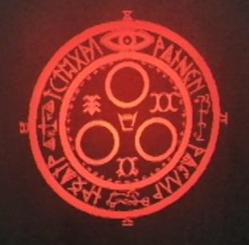
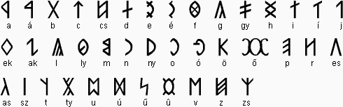

1. Анализ религиозных мифов SH - 2. Бог - 3. Иные божества Безмолвного Холма - 4. Святые культа - 5. Pyramid Head, связь тюремных палачей и религии - 6. Культ - 7. Размышления о сущности и методах построения рая - 8. Секты - 9. Религия SH и Белая Клаудия - 10. Ритуалы - 11. Метатрон - 12. Магические предметы и книги Безмолвного Холма - 13. "Нимб Солнца" как связь механизма и религии
Из покон веков в городе существует особая религия, уходящая конями еще в старинные индейские поверья. Религия почитания Боли и Страданий, религия самопожертвования во имя Спасения. Считается, что вера поддерживает человека в жизни, дает ему Надежду... Но что же может дать человеку религия Боли? Может ли Страдание очистить человека от греха, от скверны материального мира и сделать его лучше, открыть Врата в Рай?
Давайте внимательно исследуем религию Безмолвного Холма, чтобы лучше понять события игры, психологию персонажей и, возможно, даже дать ответы на поставленные выше философские вопросы.
1. Анализ религиозных мифов SH
Доктрина СайлентХилловского культа "the Order" закреплена в старинном мифе о Рождении Бога, передававшемся из поколения в поколение ("a myth that has passed down over the years") и затем записанном в виде шести картин. На мой взгляд, для полноценного анализа религии SH нужно начать с тщательного анализа ее мифологической стороны, т.к. именно тут мы можем установить основы религиозных убеждений и верований культовиков, а также узнать больше об истории культа. Только сразу хочу вас предупредить - т.к. это религиозный МИФ (к тому же редактированный "вождями" культа), то в нем присутствует множество символических элементов, смесь реальных исторических событий с религиозным вымыслом - сказка ложь, да в ней намек, так что рекомендую подойти к мифам с достаточной долей абстрактности.
1-1. Origin - 1-2. Birth - 1-3. Salvation - 1-4. Creation - 1-5. Promise - 1-6. Faith - 1-7. Мораль мифа - 1-8. Дата первого Пришествия, описанного в мифе - 1-9. Фактологический анализ мифологии
1-1. Origin
Текст: "In the begining people had nothing. They bodies ached and they hearts held nothing but hatred. They fought endlessly, but death never came. They despaired, stuck in the eternal quagmire".
Значение: Согласно убеждениям культа, когда-то давно человеческого мира в нашем понимании этого слова не было. Были лишь бессмертные люди, не имевшие ничего кроме ненависти и тьмы в своих сердцах... Даже не люди, а, возможно, лишь бестелесные души (у них не было физического тела и не было смерти), навечно замкнутые в бесконечном вакууме, абсолютной Пустоте. На протяжении всей вечности, наполненные ненавистью "люди" вели меж собой кровопролитную войну, причиняющую всем лишь боль - и даже не могли вырваться из этого нескончаемого замкнутого круга агрессии и страдания, так как не знали смери. Так или иначе, каждый является врагом каждого, - и выбором человеческой души становится вершить насилие над собратьями. И так же делают все остальные люди, т.к. у них нет Надежды, нет общей цели, к которой бы они хотели стремиться - люди лишь стремятся получить удовольствие, причем, не редко даже самыми жестокими методами и, таким образом, они все больше увязают в болоте отчаяния.
1-2. Birth
Текст: "A man offered a serpent to the Sun and prayed for salvation, a woman offered a reed to the Sun and asked for joy. Feeling pity for the sadness, that had overrun the earth, God was born from this two people".
Значение: Однажды среди всего творящегося в окружающем мире безумия появляются два человека (мужчина и женщина - по аналогии с "Адамом" и "Евой"), которые увидели Всевидящее Око в небе - Солнце. И в их душах зарождается надежда и сострадание. "Адам" и "Ева" поверили в силу Солнца (так как им больше не во что было верить) и, желая освободить остальных людей от полного страдания бесконечного существования, попросили у светила помощи посредством ритуала. Эти люди преподнесли Солнцу жертвы: мужчина, молясь о спасении, преподнес Солнцу Змею, а женщина, прося у Солнца радости, преподнесла Тростник (возможно, этот мифический "ритуал" метафорически описывает процесс зачатия двумя людьми ребенка-Бога? Например, в культуре некоторых южноамериканских индейских племен также присутствовали схожие по смыслу обряды "преподнесения Солнцу и Небу змеи и фрукта", заключавшиеся в совокуплении исполняющих ритуал мужчины и женщины и зачатии ребенка во славу божествам). Но откуда люди могли знать наверняка, что ритуал подействует? Они не могли знать,- люди просто поверили всей душой... А вера людская обладает чудотворной силой. И в результате этих мистических ритуалов действительно свершилось чудо - от "Адама" и "Евы" был рожден Бог.
Но обратите внимание на интереснейшую формулировку "Feeling pity for the sadness, that had overrun the earth, God was born from this two people", намекающую на то, что Бог родился, ибо чувствовал людскую боль и горе, охватившее землю - таким образом мы можем сказать, что в культе верили, что Бог может быть рожден только если почувствует людское горе, т.е. почувствует, что мир нуждается в нем - здесь мы находим явную связь с идеями силы\энергией чувства.
Возможно, вы уже почувствовали, что эта часть мифа пронизана библейскими мотивами Адама и Евы. Хотелось бы обратить ваше внимание принципиальное различие - в отличие от христианской доктрины, в учениях культа не Бог создал людей (их бессмертные души), а именно люди сами родили Бога. Родили своим страданием и верой в спасение... Весьма символично, эдакая "Библия наоборот".
1-3. Salvation
Текст: "God made time and divided it into day and night. God outlined the road to salvation and gave people joy and God took endless time away from the people".
Значение: Итак, Бог пришел на землю - но это вовсе не тот Бог, что дарует "демократию" и свободу. Наоборот, он создал новый мир, полный различных законов и жестких ограничений (напомню строки из SH4 о мире, созданном из человеческих мыслей и чувств через ритуал: "But his universe is different than ours -- it has limits. And in the limits of that universe, he rules as a king") - но люди были счастливы этим ограничениям, вносящим Порядок в их существование.
Давайте рассмотрим смысл всех изменений мира, внесенных Богом:
а) Бог отнял у людей вечное время и бессмертие.
Когда Бог создал новый мир, каждая из бессмертных душ была наделена "физическим" телом в этом новом мире - но жизнь этой оболочки была ограничена, Давайте рассмотрим причины ограничения времени:
Во-первых, человек, не ограниченный во времени, со временем не считается и поэтому склонен все откладывать "на потом" - но когда милосердный Бог (угу, прям сплошной сахарный трюфель, а не Бог, лол) ограничил отведенное человеку время, люди стали дорожить им - т.е. это инициировало людскую активность и жажду саморазвития.
Во-вторых, теперь боязнь смерти ограничивала людской беспредел - появилась "христианская" мораль, теперь люди больше не причиняли друг другу боли (хотя бы из-за боязни того, что их за это самих убьют).
В-третьих, теперь у людей всегда был выход - в любой момент они могли избавиться от своих страданий посредством смерти.
б) Волей Божьей время было создано Время и разделено на день и ночь.
Бессмертным людям не требовалось знать время, ибо они от него никак не зависели. Но теперь, когда люди осознали недолговечность своего пребывания в этом мире, время стало играть огромную роль в их мире.
Как мы понимаем, бессмертным людям не требовался сон - т.е. они не могли видеть сны. Но создав День и Ночь, Бог дал страдающим людям возможность наслаждаться не только реальным миром, но и снами (где человеки могли осуществлять любые мечты, не причиняя при этом вреда друг другу), тем самым как бы проведя грань между реальностью и иллюзией.
в) Насчет дороги в Рай и радости. Бог дал людям Надежду. Теперь их жизнь приобрела смысл а также у людей появилась общая цель, объединяющая их усилия - теперь индивидуальные цели уступили место общей - и люди прекратили воевать между собой - боль людская начала утихать, уступая место счастью.
1-4. Creation
Текст: "God created beings to lead people to obedience to Her. The red god - Xuchilbara; the yellow god - Lobsel Vith; many gods and angels. Finally, God set out to create Paradise, where people would be happy just by being there".
Значение: Бог посредством своей силы создал множество чудесных существ - божков и ангелов, которые фактически руководили начинаниями людей и, видимо, были чем-то вроде примеров для подражания для человеков (к примеру, Валтиэль, хотя о нем мы поговорим чуть позже). Также можно предположить, что божки отвечали за функции смены дня и ночи, смерти людей и т.п. - но это не столь важно. Весьма интересно деление божков по цветам (думаю, известный нам по SH2 Уолтер Салливан видел именно что-то, подозрительно напоминающее Кзучилбару). Да, чуть не забыл - посмотрите на правую сторону картины. Что видим? Красную Пирамиду... Вот и делайте теперь выводы об облике красного божка по имени Кзучилбара.
Кстати, если люди должны были ровняться на божков, а божков было несколько (и они, понятное дело, были несколько разные) - то вполне возможно, люди не могли ровняться на всех сразу. Значит, могли возникать группы поклонников (см. СЕКТЫ) Кзучилбары, Лобсель Виса и т.п. - каждый ровнялся на своего любимца - не могло это со временем привести к разногласиям между верующими людьми?
Другая оригинальность вышеуказанной части мифа заключается в том, что мифический Бог упоминается в женском роде... В SH1 же Бог упоминался исключительно в мужском роде ("HE has been nurtured by that nightmare" - говорит Далия Гиллеспи о вызываемом ей Боге в последней встрече). Тут стоит упомянуть, что, к примеру, у многих сатанистских божеств вообще не было пола - например, Дьявол упоминается и как "он" и как "она" - с сайлентхилловской религией произошло то же самое - и облик Бога также периодически претерпевал разнообразные изменения при многочисленных редактированиях религии Сайлент Хилла и привнесениях в нее элементов иных религий. В любом случае, лично мне привычнее говорить "Бог" ("ОНА" или "Богиня" звучит как-то коряво) - буду и дальше его так упорно называть. И вам ПРИДЕТСЯ смириться с моими привычками, дорогой читатель :)
Комментарии к облику Бога из мифа: На картине мы видим облик Божий - это бледнокожая длинноволосая женщина в красном платье. По некоторым особенностям столь странной одежды, мы можем подумать, что длинное ярко-красное платье символизирует либо кровь (напоминает кровавый след, стелющийся за Богом), либо огонь (при виде Бога в этом платье, некоторым показаться, что Она объята ярким пламенем). Как мы понимаем, за время, прошедшее со времен написания мифа, облик почитаемого в религиозной организации божества неоднократно изменялся.
1-5. Promise
Текст: "But there God's strenght ran out and She collapsed. All the world's people grieved for this unfortunate event. Yet God breathed Her last, She returned to the dust, promising to come again".
Значение: Вскоре после сотворения мира и создания всяких чудесных существ, силы Божьи иссякли, и Она скоропостижно скончалась, не успев достроить "Рай". Конечно же, все люди сожалели о столь грустном событии (по крайней мере так гласит миф) - но даже самые лучшие доктора (даже обладатели "чудотворных рук"), пытавшиеся помочь находящемуся при смерти Богу не могли ничего сделать. Незадолго перед смертью Она пообещала, что обязательно вернется и достроит начатый Рай (по доктрине убеждений культа получается, что наш с вами сегодняшний мир является недостроенным при первом Пришествии Раем).
Спрашивается - почему Бог умер? Отвечаю: согласно религии, Бог должен приходить к людям именно в самые тяжкие минуты, когда их БОЛЬ велика. А когда у людей появилась цель и Надежда, они снова почувствовали счастье - боль стала проходить, и силы покинули Бога. В мифе нам не указывается причина смерти Бога - но, пораскинув мозгами, мы также можем подумать, что что-то случилось с теми, кто "создал" этого Бога из силы своих мыслей\чувств.
1-6. Faith
Текст: "So God hasn't been lost. We must offer our prayers and not forget our faith. We wait in hope for the day, when the path to Paradise will be opened".
Значение: И даже после смерти Бога люди не потеряли надежду на пришествие Рая. Они основали культ, задачей которого было приблизить Второе Пришествие. Вместе верующие продолжали молиться и ожидать времени, когда врата в Рай будут снова открыты...
Хотелось бы обратить ваше внимание на иллюстрацию к мифу - там мы видим двух членов религиозной организации (мужчина и женщина - как мы узнаем позже, их звали Николас и Дженнифер), молящихся у "родильной дыры" (которую мы сможем увидеть в подвале культовой церкви SH3) вместе с девушкой в белой рясе (святая Алесса? - но мы еще поднимем этот вопрос далее) - просто ХОРОШЕНЬКО запомните эту картину - потом поймете, почему я обращаю на нее ваше драгоценное внимание.
1-7. Мораль мифа
В любом религиозном мифе всегда заключен какой-либо глубинный смысл, жизненные наставления. В чем же состоит мораль культового мифа? Давайте взглянем на события мифа: если у людей нет веры и надежды в сердцах, то они будут обречены на взаимную ненависть и вечное страдание. Но вера в людских душах может творить чудеса, изменять окружающий мир к лучшему, дарить счастье - и если в сердцах людей будет теплиться надежда и вера в наступление Рая, то этот лучший мир когда-нибудь обязательно наступит. Такой вот поучительный смысл. Как мы понимаем, в идеях о том, что силой своей веры люди могут изменить жизнь к лучшему (родить Бога и создать Рай), нет ничего предосудительного. Но на практике светлые идеалы зачастую искажаются до неузнаваемости - остается лишь вспомнить, насколько извращена была доктрина культа благодаря привнесению в религиозные учения элементов садизма и дьяволопоклонничества... Светлые учения при их практической реализации, как обычно, обернулись кровавым кошмаром...
1-8. Дата первого Пришествия, описанного в мифе
Как мы понимаем, вышеописанный миф представляет собой хитросплетение реальных событий и вымысла. Давайте же попытаемся отделить правду от сказки, узнать истинную суть описанных в мифе событий и, возможно, даже с определенной точностью определить дату событий культового мифа.
Для начала хотелось бы, чтобы вы вспомнили колокольню в культовой церкви SH3, где находятся портреты трех основных святых религиозной организации the Order (слева направо): Святая Дженнифер, Богоматерь Святая Алесса с ребенком на руках и божий доктор Святой Николай. Особенно обратите внимание на Святую Дженнифер. "Unwavering faith under death's blade" ("непоколебимая вера под лезвием смерти") - гласит надпись на картине, запомните это.
Далее имеет смысл хорошенько вспомнить статуи в Rosewater Park - согласно Lost Memories, паямтники в парке были установлены после гражданской войны США 1861-1865г. А вот там же стоит памятник некой Jenni*** Carroll (Дженнифер, Дженнифер!!), явившейся чьей -то жертвой (victim of persecution by t*********ans) и надпись - "что здесь произошло никогда не должно быть забыто". Так что же это за t*********ans такие? Если вы просто вскроете текстовые файлы игры, вы увидите, что на самом деле это значит "the christians", - тогда все встает на свои места (вспоминаем картину Святой Дженифер - "непоколебимая вера под лезвием смерти") и картина произошедших в те далекие времена событий становится ясна как день: местные христиане, узнав, что Дженнифер состоит в оккультной организации просто убили ее недалеко от озера Толука (потому и розовая вода - от крови) за религиозные убеждения несчастной девушки (но даже перед смертью вера Дженнифер была непоколебима). То есть мы знаем, что Святая Дженнифер была убита незадолго после гражданской войны 1861-1865 годов и примерно в то же время ей был установлен памятник. Так, Дженнифер жила в одно время со Святым Николаем (что подтверждает картина мифа №6 где изображены оба святых вместе, а также LM: "The three saints were probably established fairly recently, sometime after the Civil War" - то есть и Дженнифер и Николаю был приписан статус святых незадолго после 1865 года), а Св. Николай в свою очередь, как мы знаем по картине, был доктором Бога ("Miraculous hands, a doctor of God" - доктор занимался лечением самого Бога). А теперь проследим за логической цепочкой: "Святая Дженнифер жила и была убита в период середины 19 века --> Святые Дженнифер и Николай жили примерно в одно и то же время --> Святой Николай был доктором Бога, а следовательно жил в период первого Пришествия --> А Значит, первое Пришествие, описанное в мифе свершилось примерно в середине 19-го века, в период Гражданской Войны США". Следовательно, Бог был рожден где -то между 1861 и 1865 - и, скорее всего, помер достаточно быстро.
Кстати, это первое Рождение лишь согласно культовым мифам... может оно вообще-то и не такое уж первое? Известно, что в начале 17 века индейцы тоже что-то натворили... Но, т.к. это самое раннее Рождение, известное в культе и описанное в мифе, значит, именно тогда было "рождено" божество, которому поклонялись в культе "the Order".
1-9. Фактологический анализ мифологии
Анализ фактов из мифа поможет пролить свет на правду, о метафорически описанных в мифе событиях середины 19-го века.
Согласно мифу, перед первым Рождением все люди находились в состоянии войны между собой - это еще одно яркое подтверждение, что все события происходят во время гражданской войны (origin), значит все заморочки с бессмертием людей - мифологический вымысел. Уж как-то так получилось, что двум людям (birth), посредством религиозных обрядов как-то удалось вызвать на нашу грешную землю Бога. То, что каждый из них в мифе что-то принес в жертву Солнцу может быть истолковано либо метафора, символизирующая процесс зачатия божественного чада, либо то, что "Адам" и "Ева" принесли СЕБЯ (или еще кого-то) в жертву Солнцу ради рождения своего долгожданного божества.
Так, дальше следует Salvation - получается, новорожденный Бог сразу же явился к жителям города, а кроме того с окружающим миром начали происходить таинственные изменения.
Creation - в городе стали происходить странные события, жители начали видеть странных существ, похожих на ангелов и древних индейских богов Кзучилбару и Лобсель Виса... На одном из этих существ была надета красная пирамида... Посреди всех этих мистических событий находилось загадочное существо, очень напоминавшее женщину в длинном красном одеянии, которое свидетели того "чуда" посчитали Богом.
Promise - тут Бог скоропостижно скончался (вероятно это случилось в 1865 - всеобщее счастье в мифе скорее всего символизирует окончание гражданской войны, т.е. Бог был рожден в 1865 и сразу же с ним случилось что-то, что помешало установлению Рая).
Faith - те, кто хотели продолжения строительства Рая основали культ для этих светлых целей (значит культ появился после гражданской войны - это подтверждено и в LM). Основателями стали Дженнифер, Николай и... девушка в белом одеянии. Нет, это не Алесса, которую мы все знаем - это другая мученица, которую культ хотел принести в жертву для Второго Пришествия.
Вскоре самых преданные религиозные фанатики (Дженнифер, Николая, возможно еще кто - нибудь) были возведены в ранг святых ("The three saints were probably established fairly recently, sometime after the Civil War"), остальные люди должны были считать их идеалом и стремиться быть на них похожими, чтобы стать ближе к Богу.
2. Бог
В религии Безмолвного Холма особое место занимает образ Бога - существа, которое, Рождаясь из утробы Святой Матери, приносит человечеству абсолютно новый мир, в котором действуют свои законы и живут странные создания. Но, несмотря на то, что роль Бога обычно остается неизменной, его образ постоянно меняется в связи с изменением религии SH - эта цепочка редактировок религии прослеживается, например, в книге "Silent Hill God Ethymology". То Богу приписывали образ длинноволосой женщины в ниспадающем красном одеянии, то - демона с рогами и крыльями, то - мученицы с темными волосами, подозрительно напоминавшей одну девочку, сгоревшую когда-то при пожаре в SH...
2-1. Все употребляемые имена Бога
Стоит разобраться с именами Бога - это позволит избежать путаницы в дальнейшем.
Учитывая философские идеи SH, мы понимаем, что Бог субъективен, он может быть как Богом, так и Дьяволом - в зависимости от нашей воли ("God? Are you sure you don’t mean Devil?" - "Whichever you like"). Но эта субъективность также отразилась на религии SH - каждый представлял Бога таким, каким больше хотелось, каждый стремился приписать объекту религиозного поклонения какие-то иные свойства, иное имя - по этим причинам религия неоднократно редактировалась, а образ, имя и сущность божества (которому поклонялись культовики) постоянно изменялась.
У Сайлентхилловского Бога есть множество имен, каждый называет его как хочет,- давайте перечислим все имена:
а) Lord of Serpents and Reeds ("Лорд Змей и Тростника"; далее - просто "Лорд") - имя основано на мифе о Рождении, где "Адам" и "Ева" приносят в жертву Змея и Тростник, чтобы родить Бога. Тот факт, что имя "Лорд" упоминается даже в текстах, написанных на староанглийском языке (например, Crimson Tome, где наряду с именем "Lord" активно используются устаревшие английские слова наподобие "thou") ясно свидетельствует о том, что "Лорд" является одним из наиболее старых обозначений Бога. Стоит отметить, что Lord также в христианстве означает "Господь", но, конечно же, в религии SH речь идет вовсе не о традиционном христианском "Господе Боге".
б) Creator of Paradise - Согласно книге Silent Hill God Ethymology, Бог также именовался в культе "Создателем Рая". ИМХО тут все ясно. Подобное название тесно связано с мифом о Создании.
в) She (Она) - даже сложно назвать именем. Известно, что до возглавления культа Клаудией Вульф, ее предшественниками Богу приписывался мужской пол. Мы можем подумать, что в женский род Бога перевели после систематизации учений, проведенной Винсентом и Клаудией. Эта смена пола связана с видением Клаудией Бога и ее трепетным отношением к старшей "сестре" Алессе. Также в книге из SH3 мы видим, что Клаудия настолько идеализировала сестру, что приписала религиозному божеству внешность Алессы (см. Silent Hill God Ethymology, About Syncretic Religions)
г) God (Бог) - общеупотребимое определение божества.
д) Incubus (Инкуб) - мифический демон, приходящий к женщинам во время сна; "демон сновидений". Это имя начертано на мистическом символе культа "Halo of the Sun", а также именно под этим именем в LM упоминается Бог Алессы.
е) Samael (в Silent Hill Dead\Alive он упомянут как "Sammael") - Богу, в которого верила Далия, многие приписывали имя демона.
ж) Hades (Гадес, Аид) - на майке Джаспера Гейна мы можем увидеть изображение Бога Алессы с надписью "HADES" (т.е. Гадес\Аид). В греческой мифологии Аид является властителем подземного царства мертвых, в которое никогда не проникают лучи солнца... Это царство полно привидений и чудовищ, а охраняет его свирепый пес Цербер... Не удивительно, что Богу Алессы (который должен был принести смерть всем людям) приписали имя властителя царства мертвых. Совершенно неизвестно КТО опять переименовал Бога - также неизвестно КТО додумался выпускать футболки с его изображением... Видимо, кто-то из дружков-дьяволопоклонников Джаспера Гейна... А, может, это все происки Konami???
з) Succubus (Суккуб) - так, Инкуб уже был - теперь Суккуб (фактически, это женский вариант инкуба)... На "Succubus Card" в SH4 мы опять видим точное изображение Бога Алессы - видимо, Уолтер думал, что его зовут "Суккуб"... Вам не кажется, что пора уже оставить несчастное божество в покое и перестать его переименовывать!?
и) Devil (Дьявол) - так называют Бога, рожденного человеком через ритуалы 21 Sacraments и Holy Assumption в богохульной книге "Crimson Tome".
Стоит особо отметить Holy Mother - несмотря на то, что в культе поклонялись Святой Матери, в священных писаниях понятия Святая Мать и Бог строго разграничены - Святая Мать это то, что содержит в себе Бога, а Бог это то, что находится внутри Святой Матери.
Также, пусть вас не вводит в заблуждение "the Crimson One" (Темно-красный), упомянутый в книге "Book of Crimson Ceremony" - это не тот Бог, о котором вы могли подумать. Это красный бог Кзучилбара\Кзучилпаба (о Кзучилбаре будет пояснено чуть ниже).
3. Иные божества Безмолвного Холма
Кроме Бога, религиозные учения SH включают также ряд иных божеств и ангелов, роль которых нам предстоит сейчас разобрать.
3-1. Святая Мать - 3-2. Валтиэль - 3-3. Кзучилбара и Лобсель Вис
3-1. Святая Мать
Согласно убеждениям культа, первоначально Бог находится в утробе Святой Матери (как в своеобразном "инкубаторе"), а по мифу становится ясно, что Бог был рожден от людей. Нетрудно догадаться, что именно человек, поверивший в Бога и родивший его силой своей веры может считаться Святой Матерью. Например, в SH1 роль Святой Матери выполняла Алесса (в диалоге на кассете SH3 ее именно так и называют - Holy Mother), а в SH4 Святой Матерью, родившей свой мир и своего Бога стал, как бы это парадоксально ни звучало, маньяк мужского пола по имени Уолтер Салливан...
Сторонники культа верят, что Святая Мать, содержащая в себе Бога, не может умереть и будет реинкарнировать неограниченное количество раз ("the Mother shall be reborn" как душа Алессы реинкарнировала в Шерил) благодаря силе ангела-хранителя по имени Валтиэль. Она продолжит существовать в Раю (Алесса и Уолтер продолжили существовать с своем мире даже после смерти) и снизойдет в наш мир вместе с приходом Рая и Бога на нашу грешную землю ("Descent of the Holy Mother").
3-2. Валтиэль
Ангел из религиозных учений культа, по определенной причине очень-очень напоминающий одного особо близкого к Богу члена культа, впоследствии причисленного к лику святых... Имя "Valtiel" образовано от английского "valet" ("слуга") с прибавлением суффикса "-el", означающего статус ангела. В общем, "Valtiel" означает "слуга-ангел", а в Lost Memories создатели характеризуют его как "agent of God".
В культе считается, что данное божество наблюдает за Рождением Бога. Валтиэль также неотступно следует за Святой Матерью, следит за сохранностью её жизни (а, следовательно, и жизни самого Бога) и, согласно учениям культа, может даже Возрождать Святую Мать, если с ней что-то случится. Фактически, он является хранителем вечного цикла перерождения, гарантируя возможность неограниченных попыток Рождения Бога (и в контексте SH3 - неограниченных сэйвов ^__^). В культе Валтиэль олицетворяет собой близость к Богу, т.ч. и палачи в тюрьме Толука вскоре тоже позаимствуют наряд у Валта, чтобы быть "ближе к Богу" (иными словами, Валтиэль отчасти стал прообразом Сайлентхилловских палачей).
Т.к. Алесса Гиллеспи была глубоко убеждена в существовании этого ангела-хранителя, то его образ проявился и во внутреннем мире девочки - каждый раз, когда Хизер, якобы, умирает в своем мире - Валтиэль уносит тело Богоматери, чтобы возродить ее в этом мире и дать Богу (а заодно и геймеру) вторую попытку.
Образ Валтиэля: ангел носит традиционную ритуальную робу, все его тело покрыто ожогами, будто после ритуала самосожжения - даже лица уже не разобрать... Значит ли это, что его близость к Богу обусловлена самопожертвованием? Как правило, Валтиэль постоянно крутит красный вентиль. Этот вентиль олицетворяет круг реинкарнаций "Halo of the Sun" и символизирует, что Бог может быть Рожден сколько угодно раз - и столько же раз может быть Перерождена Святая Мать. На плече Валтиэля можно заметить татуировку в виде Печати Метатрона. Интересно, что Метатрон в книге "Otherworld Laws" также (как и Валтиэль в LM) упоминается именно как "agent of God". Некоторые могут подумать, что здесь присутствует некоторая связь...
3-3. Кзучилбара и Лобсель Вис
Индейцы, жившие на территории SH до прихода колонизаторов поклонялись Солнцу, но также у них было два других бога - красный бог возрождения по имени Кзучилпаба (с течением времени его имя исказится в "Кзучилбара"), вместо головы у которого находилась кровавая пирамида (в формировании образа божка сыграла роль культура индейцев, в которой большое значение придавалось пирамидальным формам), и желтый бог по имени Лобсель Вис, предположительно носивший желтое одеяние. Соответственно, также было и два ритуала жертвоприношений - "красный" обряд крови (кровопускания) и "желтый" обряд сожжения. Нетрудно догадаться, что эти жертвы предназначались Кзучилпабе и Лобселю соответственно, и каждый из богов являлся своеобразным покровителем своего вида ритуала.
Впоследствии индейские ритуалы сильно повлияли на ритуалы культа (ведь фактически "Адам" и "Ева" из мифа исполнили именно ИНДЕЙСКИЙ ритуал жертвоприношения Солнцу чтобы вызвать Бога - ВАЖНО!), а образы божков коренных жителей Америки оказали некоторое влияние на образ культовского Валтиэля и на ритуальное одеяние палачей.
Пока просто имейте это в виду, а я обещаю подробно рассказать и о культуре индейцев, их ритуалах и Богах чуть позже.
Значения имен: Согласно признаниям разработчиков в Lost Memories, имена божеств имеют индейские мотивы. "Xuchilbara" может представлять собой несколько видоизмененное слово "Xibalba", в языке индейцев Майа обозначающее "иной мир" или "мир мертвых". Известно, что индейцы из этого племени на самом деле осуществляли ритуалы кровавых жертвоприношений, считая, что таким образом они могут открыть врата в "мир мертвых" - Xibalba. "Lobsel Vith" в свою очередь тоже может быть переведено с языка индейцев Майа примерно как "плохой цикл плоти" ("Lob" - "плохой", "sel" - круг\цикл и "vith" - плоть). Название божества может быть связано с верованием в перерождения (благодарю pseudowolfkill за версию о значении имени Лобсел Виса).
4. Святые культа
За определенные заслуги перед культом этих смертных возвели в ранг святых и вывесили их портреты в колокольню культовой церкви. Давайте наконец разберемся со святыми и их ролью в религии SH и попробуем через анализ святых более точно воспроизвести картину случившегося во время гражданской войны.
4-1. Святой Николай - 4-2. Святая Дженнифер - 4-3. Святая Алесса - 4-4. Святой Стивен
4-1. Святой Николай (в миру - Николас)
"Чудотворные руки, доктор Бога" (Miraculous hands, a doctor of God) - вот как описывает его надпись под картиной в церковной колокольне. Очевидно, что после первого Пришествия Святой Николай стал одним из главных приближенных Бога, а также являлся одним из отцов-основателей религиозного культа "the Order" (просто так картины на доске почета не вывешивают). Теперь давайте внимательно осмотрим картину (ВНИМАНИЕ! Крайне желательно чтобы вы сейчас включили SH3, тщательно осмотрели еще раз картины в церковной колокольне (belfry) - и ТОЛЬКО ПОСЛЕ ЭТОГО продолжили чтение).
Отчетливо заметен череп на столе - тут все ясно, череп издревле был символом медиков (также может означать, что Николай работал не совсем доктором в традиционном понимании этого слова, а патологоанатомом). Стоит отметить, что изображение человеческих останков на столе у *святого* создает не слишком приятное впечатление об этом "святом". В глаза бросаются ЖЕЛТЫЕ одежды на докторе - может ли это символизировать, что Николай был последователем ЖЕЛТОГО бога Лобселя Виса?
Осматриваем картину дальше... На краю стола висит "докторский" халат Николая (это опять же больше похоже на одежду не обычного доктора, а патологоанатома) - а вот тут уже начинается самое интересное - знакомый халатик, не правда ли? Такой халатик носил Валтиэль в SH3, а также именно такие халатики носили палачи в СайлентХилловской тюрьме, совершавшие ритуальные казни... Но в то время, когда Николас мог быть доктором Бога (1865г.), еще не было ритуальных казней в тюрьме Толука, еще не было культа и Валтиэля тоже не было (т.к. не было культа).
Из этого следует, что Валтиэлю его халатик достался именно от св. Николая (т.е. Николас стал прообразом культового ангела), а тюремным палачам, в свою очередь - от Валтиэля. Но вполне возможно, что этот "докторский" халат изначально был чем-то вроде традиционного ритуального наряда индейцев, позаимствованного Николасом.
Вот и смотрите:
-- Св. Николай и Валт являлись примерами для людского подражания в культе
-- оба они носят идентичные докторские халатики
-- Николай - доктор Божий, а Валтиэль отвечает за сохранность жизни и здоровья Богоматери и Бога, воскрешает, не дает им умереть (осуществляет своеобразную "реанимацию"), а также наблюдает за "родами"
-- кроме того Валтиэль и Св. Николай весьма похожи внешне...
Напрашивается только один вывод: члены культа создали наиболее приближенного к Богу ангела по образу и подобию их святого "доктора Бога".
Теперь имеет смысл немного вспомнить облик Валтиэля - как вы могли заметить, ангел выглядит весьма обгоревшим; все его тело покрыто страшными ожогами. Если уж Св. Николай был реальным прообразом Валтиэля, скорее всего обгорелость Валта намекает на то, что Николай покончил жизнь ритуалом самосожжения. Мы можем подумать, что Николас, являясь религиозным фанатиком, решил доказать свою "близость к Богу" и покончил с жизнью, осуществив на себе практикуемый в культе почетный ритуал самосожжения. Зато судьбу и внешность Николаса отразили в облике ангела культа.
Впоследствии Алесса узнает о ангеле культа (или о Св. Николае, картина с изображением которого висела в церкви),- и его образ произведет на нее такое впечатление, что потом отразится в подсознательном мире девочки и будет постоянно следовать за Богоматерью.
4-2. Святая Дженнифер (в миру - Дженнифер Кэролл)
(Для подробностей см. Часть 4, пункт 2-15)
Стала одной из приближенных Бога (за то, что присутствовала при Рождении либо способствовала ему). Также была поставлена в разряд святых (наряду с Николаем). После смерти Бога, Дженнифер (согласно мифу, вместе с Николаем и женщиной в белом одеянии) основала культ. Потом начались гонения христиан на сторонников культа - и Дженнифер Кэрролл пала одной из жертв этого гонения - согласно памятнику в парке, она была убита христианами недалеко от озера, но даже перед лицом смерти ее вера в Бога была непоколебима. Дженнифер была убита христианами, а труп девушки был сброшен в озеро Толука - это объясняет зловещее название парка ("розовая вода" - от цвета крови).
4-3. Святая Алесса (в миру - Алесса Гиллеспи)
(Для подробностей см. Часть 4, раздел 1)
Эта мученица была сожжена своей матерью для вызова Бога (Далия считала свою дочь лишь "инкубатором" для взращивания своего божества) - но из-за происков таких "неверующих" как Гарри Мэйсон, Бог не был правильно рожден.
Посмотрите на картину - Алесса держит на своих руках ребенка, который тоже является Алессой - это символизирует спираль реинкарнаций личности Богоматери. Алесса не может умереть - и Бог внутри нее также не знает смерти, т.ч. он может быть Рожден бесконечное число раз. Изначально Алесса не была причислена к лику святых - это сделала Клаудия, беспредельно любившая свою "сестру" (Клаудия и Алесса не были биологическими сестрами, это становится ясно из поздравительной открытки в комнате Клаудии в SH3: "To little Claudia. Happy 6th Birthday. I love you as if you were my real sister" - поэтому я пишу слово "сестра" в кавычках), произведя пересмотр и редактировку религии SH за некоторое время до событий SH3.
4-4. Святой Стивен
Вообще-то информация об этом святом присутствует только в выдранных с диска текстовых файлах SH3 (или же этот файл просто ОЧЕНЬ хорошо спрятан в самой игре), т.ч. можете особо не брать ее в расчет. "St. Stephen: The Sage Who Spent His Life Restoring Scripture" - гордо гласит текстовый файл, из чего мы можем сделать логичный вывод, что Св. Стивен был причислен к лику святых за то, что потратил всю свою жизнь на восстановление Священного Писания культа.
5. Pyramid Head, связь образа тюремных палачей с религией города
Как мы понимаем, в контексте SH2 PH олицетворяет садомазохизм Джеймса, его желание покарать себя за грехи, переливающееся через край и причиняющее боль не только самому Джеймсу, но и окружающим (Мария, манекены и т.п.). Т.е. Джеймс сам является своим (и не только?) палачом. Но почему деструктивная часть Джеймса выражена в столь экзотическом виде?
Несложно догадаться, что во время пребывания в SH за 3 года до событий SH2 Джеймс как-то посетил Историческое общество SHHS - и увидел там картину с изображением палача и его жертв под названием "Misty day, remains of the judgement" - она произвела на клерка неизгладимое впечатление, и образ палача прочно засел в подсознании Джеймса.
Мы знаем, что образ палача с копьем и красной стальной пирамидой на голове запечатлен на картине в SHHS, т.е. образ ПХ связан с историей туманного города. "Originally, the pyramid head outfit was the guise of Silent Hill's executioners" - говорит нам Lost Memories.
Но давайте разберемся, носили ли реальные прообразы ПХ ИМЕННО такую одежду, что на палаче с картины, или же они были одеты чуть иначе. В принципе, культ был создан после 1865, а я сомневаюсь, что тогда использовались НАСТОЛЬКО непрактичные методы + достаточно сложно казнить кого-нибудь при том, что на голову надет тяжеленный шлем, полностью закрывающий обзор - какая ж это казнь будет с таким палачом? Смех один, а не казнь. Значит, в реале палачи не могли носить тяжеленную железяку на голове. Но как выглядели палачи на самом деле?
Чтобы ответить на этот вопрос, нужно вспомнить картину "White and Crimson Banquet for Gods" в тюрьме Толука - внимательно присмотримся к палачам на картине - белые халаты (ммм, где-то мы этот халатик уже видели) и на голове красные треугольные балахоны (да-да, именно балахоны, а не стальные пирамиды) с прорезью для глаз (значит, палачи все прекрасно могли видеть) в виде креста (это результат влияния христианской религии на религию SH). Вот, из этой картины мы установили реальный образ реальных палачей. Но, как мы видим из картины, пирамидальные палачи выполняют не обычную казнь, а жестокий ритуал жертвоприношения Богу - т.е. они связаны не только с историей города, но и темной религиозной организацией, действующей в Безмолвном Холме.
Теперь, когда мы детально рассмотрели истинный образ реальных палачей и их связь с культом, хотелось бы обратить ваше внимание на некоторые особенности образа PH - тело 100% похоже на Валтиэля (Валтиэль был идеалом, к которому должны были стремиться верующие) - на PH надет фирменный докторский халатик Николая. Но PH не полностью копирует Валта (Николая) - на голове у PH находится красная (красная! красная!) пирамида (у реальных прототипов палача - КРАСНЫЙ балахон), довершающая и без того абсурдный образ палача. Почему PH похож на Валта (т.е. Николая) - ясно, но может возникнуть вопрос, причем тут красная пирамида? Мы знаем, что у индейцев было красное божество по имени Кзучилпаба\Кзучилбара, носившее красную пирамиду на голове (см. картины мифа), и мы знаем, что религия коренных жителей Америки сильно повлияла на религию SH. Нетрудно догадаться, что при создании униформы палачей, культ решил соединить в один образ образы Валтиэля (эталон близости к Богу) и Кзучилбары (покровитель кровавого ритуала вызова Бога) с целью придания палачам образа верующего, стремящегося к Богу через кровавое жертвоприношение (как совокупности обоих идеалов близости к Богу), синтезировать эти образы с целью выведения нового, абсолютного примера, идеального святого. И образ реально существующего палача запечатлел на своей картине художник, придав ему некоторые мифические черты (т.е. стальная пирамида на голове палача - уже вымысел самого художника)
Также все сходится по хронологии: Toluca Prison была сконструирована в виде лагеря для военнопленных в 1862 и реконструирована в 1866 - а, как мы знаем (см. Часть 2, раздел 1), культ начал свою активность после первого Рождения приблизительно в 1865г. Все сходится - в 1866 открывается тюрьма Толука и в ней сразу же вводится новая одежда для палачей, которая (учитывая влияние культа на город) являлась символом почитания этих святых, а также метафорой, означавший "Суд Божий над грешником".
В общем, так или иначе получается , что PH унаследовал халат от Валтиэля\Николая, а башку (т.е. на самом деле не пирамиду, а красный балахон) от старинного индейского божества Кзучилбары.
6. Культ
С давних пор в городе действует таинственный религиозный культ, который сами горожане именуют просто "the Order". Этот культ был основан сразу же после окончания гражданской войны и главной его целью является возрождение Бога и построение "Рая" на Земле. Но религиозные убеждения данной организации, а также ее роль в жизни города постоянно менялись - давайте проследим за этими переменами и узнаем о культе больше.
6-1. История культа - 6-2. Рост влияния культа - 6-3. Крушение идеалов Клаудии, новая глава в истории культа - 6-4. Церковь культа - 6-5. Wish House
6-1. История Культа (19-й век - середина 20-го века)
Историю религиозной организации принято отсчитывать с середины XIX века, когда верующими была произведена попытка вызова Бога. В те времена доктрина культа представляла собой смесь христианских учений и традиционных поверий живших некогда на территории Безмолвного Холма индейцев (с присущей им жестокостью обрядов).
Но рождение культа после конфликта, рожденного из *политического* противостояния, не принесло, по сути, ничего хорошего и общество Безмолвного Холма опять было расколото напополам вследствие *религиозного* противостояния культа и христианской церкви. Одной из жертв этого противостояния стала девушка по имени Дженнифер Кэрролл...
Был ли культ в те далекие времена легален или правительство боролось с ним? Об этом вполне четко говорит памятник Дженнифер Кэрролл в Роузвотер парке - когда был образован "the Order" и Сайлентовским христианам не понравилось, что куча народа ударилась в новую веру - они начали вершить расправу над лидерами культа. Но, заметьте, правительство эту идею отнюдь не поддержало - и даже (нонсенс!) члену оккультной организации был установлен памятник в Rosewater Park! Это при том, что в то время везде все еще проходили сожжения ведьм (например, в Массачусетсе, расположенном не так далеко от SH). Как мы видим, в SH в 19-м веке христианство было серьезно потеснено культом. Наиболее вероятно, что либо в городскую верхушку входило множество представителей культа (скорее всего), либо правительство было куплено культом (что также не исключено).
С течением времени, культ набирает огромную силу, а его религиозные традиции начинают оказывать существенное влияние жизнь города и, в частности, на форму казней в местной тюрьме и униформу палачей. Религиозная организация получает в негласное владение приюты Hope House\Wish House (официальным владельцем являлась благотворительной организации Silent Hill Smile Support Society, которая находилась под влиянием культа), который будет впоследствии использован для промывки мозгов сиротам и обращения их в культову веру.
Тем не менее, в последующий период культ начинает дробиться на секты (см. раздел "секты") и в результате утрачивает былую власть, со временам фактически превращаясь лишь в подпольную организацию сатанистов-наркоторговцев, периодически похищавших молодых девушек для взрощения в них Бога, а также тайно прививающих сиротам в местных приютах свои темные религиозные убеждения. Согласно комментариям авторов игры в SH1OGFAQ, периодически члены культа пытались проводить ритуалы по призыву Бога, но они всегда по каким-то причинам не удавались. Но такая череда неудач продолжалась лишь до пришествия в религиозную организацию фанатичной женщины по имени Далия Гиллеспи, которая начинает активно пропагандировать поклонение Демонам и идеи всеобщего разрушения для освобождения от страдания...
6-2. Рост влияния культа
а) SH1:
Чтобы составить мнение о финансовом положении культа на момент событий SH1, достаточно вспомнить подпольную церковь культа - она расположена в подвале (точнее, даже в канализации) небольшого захолустного магазинчика в business district под названием Green Lion ("The other church in this town" - так описывает Далия эту барахолку). Это явно говорит о нехватке средств в организации. Теперь давайте сравним это с христианской церковью в SH (Balkan Church) - там все красиво: шик, блеск, красота... Количество скамеечек явно говорит о количестве христиан в городе, а интерьер - о наличии у христиан бюджета. Мы понимаем, что на момент SH1 культ не был вне закона, но и не находился на пике популярности и уж тем более не являлся официально зарегистрированной религией - иными словами, с 19-го века позиции культа сильно ослабли. Возможно, все проблемы культа заключались в нехватке верующих? (скорее всего, это связано с доминирующими на тот момент cатанистскими тенденциями в культе)
Мало верующих = мало денег = невозможность полностью скупить правительство...
Хотя, культ так или иначе пытался компенсировать нехватку пожертвований посредством союза с особо талантливыми врачами и свободной продажей продукта данного альянса - PTV. В общем-то правительство и полиция *предположительно* получали свои проценты с его продажи, так что все были вполне довольны (кроме недовольных наличием религиозной конкуренции христиан), а город тем временем загнивал изнутри.
Впрочем, Далию заботили далеко не финансы - женщина была фанатично предена своим идеям о вызове Бога-Демона и даже пожертвовала своей дочерью ради этой призрачной цели. И ее труды оказались не напрасны...
б) 17 лет между SH1 и SH3:
За 17 лет до событий SH3 погибла (убита предателем Кофманном) управляющая КУЛЬТурными делами Безмолвного Холма и, по совместительству, последний эксперт в оккультизме - Далия Гиллеспи. Культ фактически обезглавлен, в первые годы после смерти Далии в "the Order" царила полнейшая неразбериха, но вскоре высокий пост в культе занял друг покойной Далии Гиллеспи - садист ("The memories of his cruelty is forever burned into my mind" - говорит о нем Винсент) по имени Леонард Вульф, но вскоре и его засадили в психушку Брукхэвен за убийство человека ножом при религиозном споре. КУЛЬТурный аристократ по имени Винсент воспользовался моментом, и вместо садюги посадил на трон свою "хорошую подругу" Клаудию Вульф (по сути, Винсент лишь делал вид, что разделяет все убеждения Клаудии, а она слепо верила подхалиму\лицемеру). Сам Винсент ограничился положением Батюшки и заодно Главного Счетовода Культа - т.е. получил желанный доступ к кормушке, чем еще сильнее увеличил свои капиталы.
Клаудия, получив власть над культом, первым делом (в пику своему не особо любимому отцу) сменила главный курс на более либеральный "Спасем все человечество, товарищи!" - и для более действенной смены курса, занялась реформаторской деятельностью с целью гуманизировать (христианизировать) религию, а т.к. в одиночку ей было не под силу перелопатить всю гору библиотечной литературы, то для ускорения процесса систематизации она пригласила "разделяющего её взгляды" Винсента (участие в переработке религии SH давало Винсенту возможность подчинить религию собственной выгоде. Конечно же, столь практичный малый не мог упустить такой шанс). Ниже перечислены основные религиозные изменения, внесенные с воцарением Клаудии:
а) Начисто убираются идейные противники - имена Далии Гиллеспи и Леонарда Вульфа начисто стираются из истории культа - мы видим упоминание о Далии за всю игру только 3 раза - в записке отца и еще единожды за игру сама Хизер в машине невнятно бормочет что-то о матери ("A woman named Dahlia, she tried to summon the ancient god of the town. She offered up her very own daughter"). Винсент же лишь употребляет брезгливое "crazy old hag" - и ни одного письменного упоминания о Далии, посвятившей свою (и не только) жизнь Богу, или Леонарде (записки в психбольнице - не в счет, речь идет непосредственно про культ)
б) Бог сменил пол и стал похож на Алессу - Клаудия всегда идеализировала свою "сестру" и, естессно, считала, что "правильный" Бог должен быть похож на ее любимую "сестру".
в) Редактирован религиозный миф - Бог приносит Спасение всем людям, кроме того женщина в белом балахоне в конце мифа, подозрительно напоминающая Алессу, вполне возможно была добавлена Клаудией.
г) Теперь Алесса (на картине именно Алесса Гиллеспи) причислена к лику святых культа и ее портрет вывешен наряду с портретами таких культовых героев как Св. Дженнифер и Св. Николай (которые, согласно LM, были причислены к лику святых еще в 19-м веке) в колокольне культовой церкви.
д) Возможна переименовка богов - я не исключаю, что в новой религии Валтиэлю и подобным присобачили какое-то другое имя. В книге "About syncretic religions" (SH3, в библиотеке) написано о присвоении божествам новых имен под влиянием христианской религии. Кстати, теперь идеалом близости к Богу становится Алесса (картина Алессы с ребенком висит в центре и самая большая а также вспоминаем заморочки Клаудии). Т.е. "хотите быть ближе к Богу? Ровняйтесь на св. Алессу, товарищи!"
е) Помня о своих страданиях в детстве, Клаудия, начитавшись книг наподобие "Young Slaves: Child Exploitation" отменяет издевательства над детьми с целью рождения ими Бога, так как, согласно идеям Клаудии, никто кроме самой Алессы не может Родить идеального Бога (дети ликуют, т.к. их больше не будут мучить, сжигать, запирать в Water Prison и т.п.) - и начинается "Охота на Богоматерь". Теперь дети живут счастливо и религия становится для них игрой (например, поют песенки о Боге, лопают конфеты и рисуют самопальные карты церкви с зайчиками. Сразу же приходит на ум "She gives us candy And money to spend Just be sure you don’t get her mad" - поют укурыши в UFO-концовке о Клаудии Вульф).
ж) Раньше (на момент SH1) верования культа (т.е. Далии и Леонарда) носили скорее садистско-сатанистский характер, теперь же христианские идеи "Всеобщего Спасения" (Спасения именно как обычного-привычного посмертного Рая, где нет войн, болезней, старения и т.п.) являются доминирующими.
В общем теперь новый смысл переработанной религии наиболее кратко можно выразить так - "Не надо никому страдать! Давайте найдем Алессу, замучаем Алессу и заставим ее Родить Бога, который простит нам грехи наши и откроет Врата в Рай!" Думаю, такая точка зрения навеяна Клаудии христианской религией, где Иисус Христос отмучился за всех. Но хотелось бы отметить, что внешнюю сторону религии можно менять сколько угодно - но натура Божья от этого не изменится. Подтверждения этому мы видим на протяжении всего SH3...
Результаты редактировки религии на христианский манер оказываются просто потрясающими! Теперь культ активно набирает популярность, пожертвования льются рекой (да и самопожертвования фанатиков тоже - вспомните надписи в туннеле, через который Хизер заходит в церковь: "I give to you unreservedly, my body and my eternal soul") - теперь культ реально набирает обороты. Естественно, с такой популярной религией приходится считаться - религия SH официально регистрируется и о ней даже пишутся научные книги (например, научная работа под броским названием "Silent Hill's Ancient Gods: A Study of Their Etymology and Evolution"). Помните христианскую церковь Balkan Church в SH1? Так вот, в SH3 о ней нет ни слова, зато мы видим, что культ обзавелся церковью совсем не хуже! Посмотрите на количество скамеек, на отлично выполненные (с художественной точки зрения) картины мифа, на церковное пианино (культ стал вводить элементы песнопений - для большей популярности проповедей) - видно, что прихожан в этой церкви всегда хватает... Из-за чего это стало возможным? Естественно, ответ на этот вопрос дает Винсент: "...I built it with my power - the POWER of MONEY..." Впрочем, он немного преувеличивает, что это именно ЕГО сила денег (то бишь, сила денег принадлежащих Винсенту) - из записок, найденных в церкви SH3, (комната с магнитофоном believers' complaints: "I've also heard rumors that Father Vincent has been extorting donations from some followers") становится ясно, что Винсент использовал даже не свои собственные деньги, а устраивал сборы с прихожан (по всей видимости, он просто не хотел говорить об этих сборах идеалистически настроенной Клаудии).
6-3. Крушение идеалов Клаудии, новая глава в истории культа
Спустя несколько лет после SH3:
Что же случилось с культом после событий SH3? Ответ на этот вопрос нам дает письмо Джозефа Шрайбера (Если Генри въехал в Ashfield Heights Apartment через полгода после исчезновения Шрайбера, то оно *предположительно* написано приблизительно через 7 лет после событий SH3):
"April 8
Although the cult itself is gone, I'm sure the spirit of it is still alive"
Т.е. мы видим, что после смерти Леонарда, Клаудии, Винсента и еще многих последователей их религии, культ Безмолвного Холма опять находится в разрухе, да и сам город, судя по SHDI, уже долгое время заброшен. Но идеи культа уже вышли за пределы Silent Hill'а и все еще продолжают жить в головах людей. Самого культа уже нет, но остались его последователи (быть может, они и возродят культ впоследствии?) По образу последователя культа "нового типа" - Джаспера Гейна (посмотрите на его стильную маечку!) можно судить, что, когда сторонников привнесения христианских идей в религию SH не стало, снова начинают возрождаться дьяволопоклоннические настроения Далии Гиллеспи...
Культ умер, да здравствует культ!
6-4. Церковь культа
В Silent Hill 3 мы можем посетить церковь культа (где в маленькой комнатушке и жила Клаудия Вульф), которая находится рядом с парком развлечений Lake Side Amusement Park. Тем не менее, некоторые противоречия в высказываниях персонажей и комментариями авторов игры породили множество слухов и непонятностей относительно церкви. Давайте попытаемся во всем разобраться.
В последней встрече с Клаудией, Винсент утверждает "Home? This church is my home. I built it with my power" - но действительно ли Винсент построил эту церковь? Опровержения этому мы находим не только по ходу игры, но и в LM:
а) Когда Хизер осматривает витраж в церкви, она вспоминает: "Somehow i remember this stained glass... I used to come to this chapel all the time when i was a little girl... But it wasn't actually me. It was actually Alessa when she was a little girl" - т.е. эта церковь была и как минимум за 24 года до событий SH3 - тогда Винсенту было максимум 2 года (LM: "name: Vincent age: 24~26")
б) LM: "...the map of the church A map that is drawn with a childlike simplicity. Alessa, whose mother was Dahlia, must have visited this church" Возможно, Алесса проводила достаточно много времени в этой церкви?
в) LM: "Alessa's thoughts from her childhood linger in the church. It may be that the younger version of Alessa who was teased and called "witch" is wandering aimlessly about the church" - т.е. этой церкви действительно больше 24 лет.
г) В Silent Hill: Among the Damned Джейсон и Далия после блужданий по парку развлечений приходят как раз в эту церковь. Если Далия из комикса по SH - действительно ТА Далия, о которой мы все подумали, то события SHAtD должны происходить не менее чем за 31 год до событий SH3 - т.е. церкви должно быть уже более 30-ти лет...
д) Давайте вспомним место, где Хизер дерется с Богом в конце SH3: "the underground area of the church is in fact a ruin where the town's former residents once conducted rituals" - т.е. церковь была построена на священном месте для ритуалов. Возможно, ей уже не один век?
Теперь подведем итог: ранее в этом месте (западная часть SH) проводились ритуалы по вызову Бога, после 1865г. формируется культ (под предводительством Дженнифер и Николая) - выкупается земля, на которой ранее проводился ритуал (северо-западная часть города - В SH3 Винсент так описывает ее расположение "The church is on the other side of the lake. Across the lake, on the north side. If you’re going you’d better go through the amusement park. It’s probably the only way in now. Go northwest on Nathan Avenue. It’s a bit far but closer than heaven") и на ней строится церковь культа. То есть она существовала еще с 1865г (см. иллюстрации к мифу - св. Дженнифер и св. Николай стоят в финальной комнате церкви с "родильной дырой"). Винсент же ничего не строил - он лишь, собрав деньги с прихожан, провел капитальный ремонт церкви, а также придал ей роскошный вид для привлечения потенциальных верующих .
6-5. Wish House
Wish House (Дом Желаний) является приютом, расположенным в лесах рядом с Безмолвных Холмом, неподалеку от места, где в далеком прошлом коренные жители (индейцы) поклонялись своему священному камню "Nahkeehona" и устраивали сеансы общения с духами своих умерших предков. Официально приют принадлежит благотворительной организации "Silent Hill Smile Support Society" или "S4", но на деле управляет им религиозная секта "Holy Mother Sect". Известно, что здесь практиковались методы особой жестокости к детям - сирот заставляли читать Священное Писание культа и периодически запирали в ужасную бетонную Башню-Тюрьму "Паноптикон", располагавшуюся в лесу рядом с приютом. Именно здесь провел свое детство известный нам по SH2 и SH4 маньяк-убийца Уолтер Салливан. Конечно же, в городе ходили слухи о жестокостях, творимых в приюте, и даже репортер Джозеф Шрайбер однажды опубликовал статью следующего содержания в журнале "Concord":
Teaching Despair: “Wish House”.
“Wish House,” an orphanage on the outskirts of Silent Hill. But behind it’s false image is a place where children are kidnapped and brainwashed. Wish House is managed by the “Silent Hill Smile Support Society,” a charity organization sometimes called “4S”. It’s true that 4S is a well-respected charity that “takes in poor children without homes and raises them with hope.” But at it’s heart, it is a heathen organization that teaches its own warped dogma in lieu of good religious values. Mr. Smith (temp), who lives near “Wish House,” had this to say: “Sometimes at night I can hear their weird prayers and the sounds of [children] crying. I went there to complain one time, but they ran me right out. Since then it hasn’t changed a bit.” In fact, this reporter was refused admission when he attempted to take photographs in the facility. What exactly do the folks at “Wish House” have to hide? During my investigations, I was able to discover, however, a suspicious-looking round concrete tower which appears to be part of their facilities. Unfortunately no one was willing to tell us what the tower was used for. But it seems unlikely that it has anything to do with the business of raising orphans. It may in fact be a prison, or a secret place of worship. The cult religion that operates “Wish House” is known by the locals simply as “The Order”. It’s a religion that is deeply interwoven with Silent Hill’s history. But it’s worshippers’ fervent belief that they are among the elite “chosen people” has a dark and dangerous side. I intend to continue my investigation of “Wish House” and the cult behind it. I’ve always believed that “telling the whole truth” and showing the children the true path, is our most important duty.
Joseph Schreiber
О соотношении Wish House и Hope House: фактически, Шрайбером было опубликовано две аналогичных заметки о двух приютах (Wish House и Hope House) в двух различных журналах ("Concord" и "SH Times!") - одну мы находим в психбольнице SH3, другую - в SH4. Мы можем лишь подумать, что речь идет об одном и том же приюте - но либо у него есть два употребимых названия, либо приют вскоре после выхода статьи журналиста переименовали (и Джозеф решил сменить название в статье на новое и опубликовать статью снова в другом журнале).
Приблизительное расположение приюта: по таким находящимся рядом с приютом местам, как кладбище и странный завод, мы можем определить примерное расположение "Дома Желаний":
-- SH2 - после Silent Hill Historical Society (юго-запад города, на другой стороне озера от Silent Hill Lake Side Amusement Park) Джеймс некоторое время блуждает по своим лабиринтам и заходит на кладбище, где можно найти могилу Уолтера Салливана.
-- SH4 - недалеко от Wish House в лесу находится могила Уолтера Салливана .
-- SH2 - После кладбища Сандерленд попадает на мясокомбинат.
-- SH4 - недалеко от кладбища находится подозрительный завод.
-- SH2 - Мясокомбинат и кладбище находятся где-то близко к озеру Толука, в частности, "морозильник" мясокомбината находится вплотную к озеру (для быстрой доставки мяса)
-- SH4 - Кладбище, лес, "завод" и приют находятся недалеко от озера Толука, на которое можно полюбоваться в SH4. Гуляя по "заводу" в SH4 Генри постоянно сетует на жуткую вонь - уж не запах ли это протухшего мяса? (кстати говоря, по всему лесу разбросаны куски протухшего мяса - воспоминания Уолтера о близлежащем мясокомбинате?)
Учитывая выше сказанное, можно определить расположение приюта как "лес на юго-западе города".
7. Размышления о сущности и методах построения Рая
Известно, что культ стремится с помощью силы "Бога" принести во весь мир "Рай", считая свое дело благом, а любые цели - оправданными. Тем не менее, в религиозной организации так и не было достигнуто единство взглядов на "Бога" и сущность идеального мира, что повлекло к разбиению организации на секты и неоднократным редактированиям религии. На данный момент в SH-серии было представлено несколько принципиально различных концепций "Рая" и вариантов его достижения.
7-1. Идеи абсолютного Рая в теории и практике - 7-2. Трактат об априорном несовершенстве идеи единого "Рая" - 7-3. Рассуждения о боли, мучениках и ненужных людях - 7-4. Спасение избранных, Рай для избранных (анализ идей Леонарда Вульфа) - 7-5. "Everyone will be released, from pain and sufferring!" (анализ идей Далии Гиллеспи) - 7-6. "Paradise, where people would be happy just by being there" (анализ идей Клаудии Вульф) - 7-7. "Mom! Let me in!" (анализ идей Уолтера Салливана)
7-1. Идеи абсолютного Рая в теории и практике
Члены культа, следуя старинным поверьям, считали, что посредством жестоких ритуалов они очищают мучеников, слыша боль которых, "Бог" рождается (снисходит на землю) и создает абсолютный "Рай" (после того как "очищает мир пламенем" - уничтожает существующие устои, чтобы построить новый идеальный мир "с нуля") - но на самом деле они заблуждались. Посредством ритуалов культовики лишь увеличивали силу боли жертвы религиозных ритуалов настолько, что внутренний мир "очищаемого страданием" набирал огромную силу и приобретал возможность затягивать в себя людей. Иными словами, вызываемый культом "Рай" по своей истинной сущности является вовсе не работой Бога или Дьявола, а плодом разума обычного человека! А такой мир слишком ненадежен, непредсказуем - откуда мы можем знать, что творится в голове другого человека, можем ли быть уверены, что его внутренний мир представляет собой именно идеальный гармоничный "Рай", полный счастья и радости? Этого никак нельзя узнать заранее - а потом может быть уже слишком поздно... Как мы понимаем, пытаясь управлять силой чужих мыслей, культ играл со спичками, которые могли разжечь адское пламя на всей земле...
7-2. Трактат об априорном несовершенстве концепции единого Рая
В чем же заключается сущность "Рая"? "place, where people would be happy just by being there" - гласит четвертая часть мифа. Что ж, тогда, видимо, Рай должен удовлетворять все желания людей, приводить их надежды мечты в исполнение... Но разве может такое быть достигнуто, посредством использования силы психической энергии? Даже если посредством ритуалов культу удастся сделать так, чтобы чей-то внутренний мир ("Рай") поглотил ВСЕХ людей и стал единственной реальностью, это все равно не сможет принести счастья *всем* людям. Все дело в относительности и субъективности восприятия таких философских категорий "добро" и "зло". Кто-то считает идеальным мир без войн, старости, смерти; другие могут обрести свое счастье лишь в самых темных глубинах кошмара, третьи могут жаждать смерти, глобального разрушения и Апокалипсиса, а четвертые и вовсе могут не хотеть никакого Рая... В мире нет абсолютных истин, применимых ко всем людям, ведь желания и системы ценностей всех обитателей нашего мира вполне могут быть различны. И, если чей-то один идеальный мир действительно станет "Раем", воздействующим на всех остальных людей, то он в любом случае не сможет удовлетворить желания *всех* до единого...
Единственным разумным выходом в такой ситуации мог бы стать такой "Рай", который состоял бы из тысяч различных внутренних миров, изолированных друг от друга - в таком случае каждый человек мог бы уединиться в мире, наиболее полно отражающем его собственные желания и потребности, как в скорлупе фантазий об идеальном мире... Но, во-первых, такой вид "Рая" никогда не сможет быть достигнут (из-за того, что миры имеют свойство к взаимопроникновению и смешиванию), а во-вторых, еще не известно, принесет ли он кому-нибудь счастье (ведь не принесло же счастья Эрнесту Болдуину существование в своем одиноком мире скорби и уединения). Тогда, может быть, и не нужно людям никакого "Рая"...?
7-3. Рассуждения о боли, мучениках ненужных людях
Согласно религии, "Бог" приходит, слыша страдания людей - и получает силу от этих страданий (т.к. "Бог", психическая энергия растет от чувств и, в частности, отрицательных эмоций человека-"инкубатора") - и получается, что без боли и страданий "Рай" никогда не сможет быть построен... Именно эта особнность религии города и предрешила особое почитание Боли в культе, а также создание жестоких ритуалов. Вообще, учитывая особое почитание в религии SH мучеников, Боли и различного садизма в виде вырываний сердец, можно сделать вывод, что в члены религиозной организации считали Бога чуть ли не воплощением Боли и Страдания - хотя, по механизму мы знаем, что Бог в принципе может отражать любое желание и чувство. Очевидно, в культе особо почиталась именно Боль, т.к. это чувство можно ВЫЗЫВАТЬ независимо от воли самой "Богоматери" (или "самого" - по идее, "родить" своих "Бога" и "Рай" может быть хоть маньяк-сирота) + это связано с жестокими индейскими обрядами.
Но как же тогда делать с людьми, не испытывающими боль и не стремящимися причинять ее другим? Они не питают "Бога" силами, никак не плиближают приход "Рая". Заслуживают ли такие люди "Спасения"? Члены культа так и не пришли к общему мнению по этому вопросу - некоторые желали "спасти" всех, другие считали более целесообразным просто избавляться от "ненужных людей", не достойных попасть в Рай для избранных...
Итак, культ начинает попытки использовать Боль, чтобы скорее завершить процесс построения "Рая" - и в культову Библию постепенно вводятся заморочки типа: "Вырви 10 сердец чтобы продемонстрировать Богу свою преданность", "убей 21 человека для Пришествия Святой Матери" и т.п. "The Order" использует таких людей как, например, Алесса Гиллеспи и Уолтер Салливан для наказания еретиков и привнесения в мир Боли - просто нужно заставить их верить в Бога и страдать - и это людское страдание, набирая силу, приблизит момент Рождения Бога (помните, что говорилось ранее о том, как негативные МЫСЛИ и ЧУВСТВА заключенных сильно повлияли на СИЛУ ГОРОДА?).
7-4. Спасение избранных, Рай для избранных
(анализ идей Леонарда Вульфа)
Леонард Вульф являлся высокопоставленным религиозным фанатиком, убежденным в своей правоте и не желающим слушать никого другого. Он следовал традициям обрядов крови (именно поэтому перед встречей с Вульфом мы должны провести ритуал кровопускания) и верил, что при пришествии Бога, Рай смогут видеть лишь "избранные", лишь те, "кто слышит Глас Божий", что в новый мир никогда не смогут попасть "ненужные люди" ("Why must be reward even the unbelievers?" - вопрошает культовик). Мы можем подумать, что столь элитистские идеи были вызваны высоким положением Вульфа в религиозной организации и его беспредельно завышенной самооценкой.
Следуя своим убеждениям, культовик посвятил себя борьбе с "ненужными людьми" ("the world is teeming with unnecessary people. It's God's decision that I fight") - себя же он, естественно, считал вполне "избранным". А чтобы подтвердить чем-то убеждение в собственной "нужности" Богу, Вульф начал защищать в общем-то бесполезную тарелку, гордо именуемую "Талисман Метатрона" и убивать ножом "еретиков" в религиозных спорах...
Далее стоит рассмотреть Вульфовы взгляды на устройство идеального Рая. Леонард и Далия представляли "дьявольскую" сторону культа, к тому же Лео был явным садистом - убийцей (посмотрите на его рисунки - кровожадные тенденции налицо, кроме того культовик избивал даже свою собственную дочь!). Понятно, что кровавый мир Алессы вполне подошел бы ему, и, если для всех остальных людей он был бы кошмаром или Адом, то Леонард получал бы в нем удовольствие. По всей видимости, культовик хотел, чтобы Далия СПЕЦИАЛЬНО изначально взрастила в дочери понимание идеального мира (а.к.а. "Рай") именно как помеси Ада с мясорубкой, а понимание Бога именно как Чертообразного летучего козла, а потом использовать силу "Бога" Алессы что бы оказаться внутри этого кровавого мира. Там бы он явно смог повеселиться на славу...
7-5. "Everyone will be released, from pain and sufferring!"
(анализ идей Далии Гиллеспи)
"It’s not uncommon for people to worship the same god and still disagree..." Несмотря на то, что и Леонард и Далия представляли "дьявольскую" сторону культа, и "подружились" на почве общего интереса к вызову Бога, их представления о "Рае" были несколько различны.
А каким же себе представляет "Рай" Далия Гиллеспи? Это отражено в последнем диалоге Гиллеспи с Мэйсоном: "The time is neigh. Everyone will be released, from pain and sufferring. Our salvation is at hand. This is the day of reckoning. When all our sorrows will be washed away" - по этому монологу можно судить, что Далия желала освобождения, причем, освобождения именно ДЛЯ ВСЕХ, а не только для "избранных". Но, если соотнести это с другим монологом (Далия за всю игру вообще говорит лишь малопонятными для обычного геймера монологами) Гиллеспи: "When it is completed, all is lost. Even in daytime, darkness will cover the sun!.. Everyone will DIE!", то становится ясно, что ее "Рай" скорее напоминает всеобщую смерть, вечную ночь, небытие. Гиллеспи считала, что жизнь приносит лишь страдание и хотела освободить всех людей от этого страдания, устроив самопальный Апокалипсис локальных масштабов (или покрупнее? Все зависит от силы дочуркиного страдания и ненависти).
В чем же истоки подобных взглядов Далии? На момент SH1 ей 46 лет - т.е. скорее всего она своими глазами видела ужасы Второй Мировой и это всеобщее страдание оказало огромное влияние на молодую Далию - в ее голове после этого укоренилось убеждение, что жизнь всегда приносит лишь страдание, а смерть от страданий избавляет - поэтому женщина и занялась черной магией, храня надежду, что ей удастся устроить Апокалипсис и освободить всех людей от оков страдания, оков существования - т.е. изменить мир, разрушить его, превратя в небытие, где уже не может быть жизни и страданий. И для этих целей Далии и нужен Апокалипсис - мир должен быть очищен огнем... И в религии SH Далия наконец-то нашла способ исполнить свою давнюю мечту...
Для осуществления своих темных целей женщина намеренно издевалась над своей единственной дочерью Алессой, тем самым извращая ее внутренний мир - Алесса начала ненавидеть всех людей, мечтать об их смерти - и это отразилось в ее мире, идеалом Бога Алессы стал Самаэль - демон, несущий смерть всем людям. Таким образом, Далии оставалось лишь использовать силу мыслей дочки-"инкубатора" и сделать Алессин мир единственной объективной реальностью, которая принесет смерть всем, видящим ее. Но Гиллеспи так и не осознала, что, находясь в "Раю", сознание не может умереть (из-за этого Лиза Гарланд была обречена на вечные страдания) - т.е. если бы мечта Далии осуществилась, то этот Апокалипсис вовсе не принес бы желанное освобождение, а длился бы вечно, превратив мир в вечный кошмар, вечную агонию или кровавый идеал "Рая" для садюг вроде Леонарда...
7-6. "Salvation of all Mankind"
(анализ идей Клаудии Вульф)
Пожалуй, идеи Клаудии на порядок интереснее идей ее предшественников. С одной стороны, ее взгляд на проблему "Рая" категорически отличается от взглядов Далии и Леонарда (в отличие от них, на взгляды Клаудии сильно повлияла христианская религия), но с другой стороны, и Леонард и Далия всегда оказывали большое влияние на девушку.
Клаудия, по вине отца-садиста испытавшая в детстве много страданий, видела "Рай" как мир без жадности, войн, ненависти, старости, болезней и страданий ("a place with no pain. No hunger, no sickness, no old age" - описывает девушка желанный идеальный Рай) - эдакий рафинированный мирок. Но можно ли мир без каких-либо отрицательных сторон назвать идеальным? Может ли существовать белое без черного? Смысл, пожалуй, в том, что нет радости без горя, тени без света, действия без противодействия и т.п. Если нет старости, то как понять, что такое молодость; если нет ненависти, то как узнать любовь? Её тоже нет. Исключая одно, Клаудия тем самым исключала и другое. Вообщем, не рай получается, а ничто. "Sounds pretty boring" (благодарю Salin за рассуждения об отрицательных сторонах взгляда Клаудии на идеальный Рай).
Также, в пику воззрениям своего отца, сердобольная жрица желала именно такого Рая для ВСЕХ людей (впрочем, в альтруистском угаре она как-то позабыла спросить остальных людей, подлежащий осчастливливанию, нравится ли им такая модель "Рая").
Девушка всегда идеализировала свою старшую "сестру" по несчастью - Алессу. Она полагала, что Боль очищает человека, рождает в нем самые светлые чувства ("Is it so hard to believe that sympathy could be born from pain and suffering?" - Клаудия раскрывает свои идеи в последней встрече) и поэтому мир, созданный Алессой, испытавшей в своей жизни достаточно страданий, должен быть прекрасен, представлять собой идеальный Рай. Клаудия даже представить себе не могла, что больной разум Алессы вместо Рая, предпочел скрыться от мира в темноте кровавого кошмара ("I’d rather go to Hell"). Идеей Клаудии было использовать силу "внутреннего Бога", силу страдания Алессы для того, что бы сделать ее (Алессин) внутренний мир единственной реальностью, распространить его действие на всех людей - тогда все начнут видеть "Рай" Алессы и все будут счастливы.
Также на идеи Клаудии оказала влияние Далия Гиллеспи ("She was totally brainwashed by that crazy old hag" - говорит Винс о тлетворном влиянии Гили на Клаву). В частности, идея о невозможности счастья при жизни а также идея о всеобщем Спасении. Посему, Клава также как и Далия считала, что весь мир должен быть очищен огнем ("The world must first be cleansed with fire") - но, если Далия верила, что ее Апокалипсис станет концом человечества, освободит всех от существования, то Клава была убеждена, что смерть - это лишь освобождение от оков ("It’s time for Mankind to be released from the shackles of sin that bind them"), связывающих человека (также вспоминаем "Be then released from the bonds of the flesh and gain the Power of Heaven" - эта строка в точности описывает идеи Клаудии) - т.е. только смерть в материальном мире дает возможность человеку всецелостно перейти в мир духовный - т.е."Рай" и жить в этом мире вечно.
7-7. "Mom! Let me in!"
(анализ идей Уолтера Салливана)
Уолтер Салливан не был желанным ребенком, никто не хотел его рождения. Даже родители просто оставили своего ребенка на верную смерть в квартире 302. По счастливой случайности Уолтер все же выжил - но жизнь в мире людей принесла ему не счастье, а лишь страдание, т.к. ребенок никому не был нужен. В приюте над сиротой издевались, запирали в тюрьму, заставляли учить Священное Писание культа и принципы создания собственного мира и Рая через какой-то кровавый ритуал... Как бы Уолтер хотел не рождаться, как бы он хотел повернуть время вспять и вернуться в утробу матери, как бы он хотел больше не жить... Но ему не суждено было найти свою настоящую мать и, поддавшись детским заблуждениям, Салливан поверил, что его матерью была Квартира 302 - и чтобы вернуться в утробу Матери ему нужно было пробудить Квартиру во что бы то ни стало... И тогда Салливан понял - Мать не хочет пробуждаться в мире людей, где царит боль и страдание, и чтобы пробудить Квартиру, Уолтер должен очистить ее от мира людей ("21 Sacraments were the only way to purify Her") создать для нее новый мир через жестокий ритуал мироздания под названием 21 Sacraments. Таким образом, главная мечта всей жизни Уолтера была тесно связана с учениями культа и не могла быть осуществлена без исполнения 21 Sacraments for the Descent of the Holy Mother... И, чтобы подарить жизнь любимой Матери и пробудить ее в лучшем мире, чтобы обрести желанное умиротворение в Утробе и самому погрузиться в вечный сон, Уолтер Салливан не только готов покончить со своей жизнью, но и принести в жертву Квартире еще жизни двадцати человек...
8. Секты
Как уже было сказано выше, культ разделился на секты, каждая из которых по-своему видела Бога и находила свои пути стремления к Нему (или к Ней) - эта идея полностью подтвердилась в SH4 (а также в Victims List). Что ж, давайте разберемся в сектах. По всей видимости, основных (изначальных) сект существует 3 штуки (названия сект указаны только в Victims List от Конами - в самой игре их нет), а также сравнительно недавно созданная Valtiel sect.
8-1. "Желтая" секта Saint Ladies sect - 8-2. "Красная" секта Holy Mother sect - 8-3. Общность "цветных" сект - 8-4. Секта Lord of Serpents and Reeds - 8-5. Религиозный Хаос - 8-6. Секта Валтиэля - 8-7. Объединение сект
8-1. "Желтая" секта Saint Ladies sect
(ее одно время возглавляла кое-какая "important Lady")
Помните, как загадочный голос по телефону задает судьбоносный вопрос Хизер (Шерил, Алессе): "Which do you prefer? To give pain or to receive it?" Вот, именно по такому принципу и делились секты.
Saint Ladies sect была изначально частью единого культа "the Order" и специализировалась на обряде жертвенного самосожжения (потому и желтая), покровителем которого когда-то было желтое индейское божество по имени Лобсель Вис. Смысл убеждений стороннников секты "Святых Леди" заключался в приближении к Богу через страдание и Боль. Ничего удивительного, что Далия Гиллеспи заняла высокий пост в этой секте - приучить к "Боли ради Высшей Цели" она умела... "Most likely her mother is abusing her. I've never seen her come in without some sort of scrape or bruise. Her expression is pitifully dark for a 6 year old" - мы находим подтверждение этому в записках учителя Алессы. Но Алесса Гиллеспи была не единственной жертвой религиозных заблуждений - согласно комментариям авторов игры, сектанты также нередко похищали девушек, чтобы посредством своих жестоких обрядов сделать их "инкубаторами" для Бога.
Здесь особая роль придавалась огню и мученикам - "and the martyrs will burn in the fires of hell" - говорит Далия Гиллеспи. Следуя традициям коренных жителей Америки, особо в секте почиталось Солнце ("It may have some connection with the main deity being a sun God" - говорит нам Lost Memories про ритуал сожжения).
8-2. "Красная" секта Holy Mother sect
Второй сектой культа является "красная" секта, смыслом которой являлось стремление к Богу через насилие (это и есть "To give pain") - т.е. привнесение Боли в жизнь. Как мы знаем из SH4, основным ритуалом для вызова Бога в этой секте являлся жестокий и кровавый "21 Sacraments for the Descent of Holy Mother" (включает обязательные убийства разными способами - разрубание, забивание досмерти, вырывание сердец и т.п.), где весьма ярко отражены садистская направленность секты Святой Матери. В далекие времена индейцев, покровителем кровяного ритуала жертвоприношения, используемого данной сектой, был красный пирамидоголовый бог по имени Кзучилпаба\Кзучилбара.
Необходимо отметить, что в отличие от секты Святых Леди (где в первую очередь почитается именно сам Бог), в "красной" секте особо почитается Holy Mother - религиозное божество, содержащее Бога в своей утробе (см. Часть 2, пункт 3-1). Посему, через ритуалы члены секты вызывали не непосредственно Бога, а Святую Матерь, из которой желанный Бог родится лишь впоследствии. Мы видим своеобразную трехступенчатую систему достижения "Рая" в учениях секты: сначала посредством ритуалов вызывается (перерождается) Святая Матерь, потом только она рожает Бога, и лишь после этого Бог создает желанный Рай (милостиво даруя Спасение "Нации Греха"). Иными словами, в религиозной доктрине данной секты Святой Матерью не просто обычная смертная мученица наподобие Алессы (в отличие от учений секты Святых Леди), но отдельное божество.
Также, HMs владеет приютом для детей Wish House в лесу в окрестностях Безмолвного Холма, где и воспитывает потенциальных "красных священников" (точнее - потенциальных садистов-маньяков), прививая маленьким сиротам ненависть ко всему окружающему миру (вспомним хотя бы вывеску в Wish House, предостерегающую детей об опасностях внешнего мира "The Outside is filled with dangerous things. If someone goes Outside without an adult's permission, the Master is sad", а также запугивания детей - "Everybody says Ashfield is a realy scary place" - также находим мы в лесном "дневнике" Уолтера - т.е. детей изначально держали в страхе настраивали против окружающего их мира) и фанатичную веру в жестокие идеалы секты. Что ж, учитывая религиозные взгляды и положение в культе Леонарда Вульфа, можно с уверенностью сказать, что он одно время занимал высокий пост в "красной" секте (да-да, "Important Lady", приходившая в Wish House, как мы знаем из дневника Уолтера, была ни кем иным, как Далией Гиллеспи, навещавшей своего коллегу Леонарда Вульфа), также по всей видимости именно он привил своей дочке - Клаудии принципы "Насилия ради Высшей Цели".
8-3. Общность "цветных" сект
Несмотря на то, что "желтая" секта SLs и "красная" секта HMs на первый взгляд являются полной противоположностью друг другу, у них есть очень много общего:
-- Во-первых, в обеих сектах особое внимание уделяется Боли (помним, что боль обладает наибольшей силой). Думаю, можно сказать, что обе секты являются частью единого целого.
-- Во-вторых, в сектах стремление к Богу происходит как бы через себя, через самоочищение.
-- В-третьих, "Раем" в каждой секте считается мир-после-смерти (см. ритуалы), к которому надо стремиться опять же "через себя" - т.е. налицо пренебрежение к миру материальному и почитание мира духовного, религиозная интровертность.
Из всего этого ясно, что обе секты фактически основывались на идеях субъективности Бога и субъективности "Рая" - т.е. принципы Вызова Бога и "Рая" всегда одинаковы, а вот какой ты Вызовешь "Рай" и какого Родишь "Бога" - зависит полностью от твоих собственных взглядов и каждый может вызвать того Бога, в которого сам истинно верит (это и проявляется в ритуале 21 Sacraments в SH4). И, опираясь на эти идеи, руководители сект пытались вызвать именно того Бога и тот "Рай", который им самим был нужен, заставляя поверить в него детей из приюта, тем самым воздействуя на их подсознательный мир и, способами убеждения, подстраивать его под себя (это и делает Далия Гиллеспи с Алессой).
8-4. Секта Лорда
В стороне от "цветных" сект стояла еще одна секта - секта Лорда (конечно же, это не христианский Господь-Бог, а "Lord of Serpents and Reeds" из культовой мифологии), представители которой явно терпеть не могли своих собратьев по культу ("How can our Lord forgive such an abomination...?"). Священным писанием данной секты являлась старинная книга "Crimson Tome", написанная сторонниками секты Лорда в далекие времена (обратите внимание, что в книге используются элементы староанглийского языка), и критикующая идеалы секты Святой Матери. Давайте разберемся в истоках такой неприязни.
Вспомним 1865г. - именно тогда был впервые рожден культов Бог (и именно с того момента началась история культа). А теперь вспомним религиозный миф: получается, что многие культовики верили, что до Первого Пришествия мира вообще не было (бессмертные люди-души-духи, обреченные на вечное бесцельно-безнадежно существующие), потом родился (или все же *родилась*?) "Лорд Змей и Тростника" и начал созидать мир - день и ночь, жизнь и смерть и т.п. То есть культовики верят, что сама действительность создана Лордом, что действительность и есть этот недостроенный "Рай". А теперь почитаем старинную книгу секты Лорда под названием Crimson Tome:
а) "Through the Ritual of the Holy Assumption, he built a world. It exists in a space separate from the world of our Lord. More accurately, it is within, yet without the Lord's world" - как мы уже знаем по сюжету SH4 the Room, результатом Holy Assumption является уход в собственный подсознательный мир, который (по мере выполнения 21 Sacraments for the Descent of Holy Mother) начинает втягивать в себя и других людей, точнее - постепенно вытягивать их сознание из действительности. Особо интересно, что в книге под "миром Лорда" понимается именно то, что все мы привыкли именовать "реальным миром".
б) "How can our Lord forgive such an abomination...?" - т.е. секта Лорда не признает сотворение новых миров и новых Богов человеческим разумом. Не удивительно - если сектанты считали, что Лорд сотворил действительность, то любой уход от действительности, попытка скрыться от нее равноценна ереси.
в) "She who is called the "Holy Mother" be not holy one whit" - т.е. секта Лорда не признавала идеалы секты Святой Матери и считала почитаемое ей божество отнюдь не таким уж святым...
г) "The "Descent of the Holy Mother" is naught but the Descent of the Devil" - в секте Лорда считалось, что существо, содержащее в утробе своего собственного Бога, является никем иным как Дьяволом!
д) "The "21 Sacraments" be naught but the 21 Heresies" - 21 Sacraments - способ перевода людей из святой действительности в собственный извращенный мир - есть богохульство, ересь, совращение верующих в действительность и живущих в ней.
Из всего этого следует: секта Лорда образована довольно давно (их книга уже рассыпается на части от времени) и противостоит идеалам "желтой" и "красной" сект, основываясь на принципе "нефига через ритуалы вызывать\сотворять собственных Богов - а не то вызовете на свою голову Дьявола!". Сторонники секты Лорда особо почитают действительность (как недостроенный Лордом "Рай") и считают, что лишь только Бог (Лорд) может построить идеальный "Рай" - т.ч. они ждут возвращения именно Лорда (и ни кого другого) с целью апгрейда "действительности" до уровня "идеального Рая" (интересно, а им в голову никогда не приходила мысль, что их Лорд был лишь Богом, рожденный из чьего-то извращенного подсознания в период Первого Пришествия). По всей видимости, типичными представителями секты Лорда были не особо страдавшие в жизни люди, которых устраивал уже существующий мир.
8-5. Религиозный Хаос
Итак, после гражданской войны был создан культ и через некоторое время распался на секты - первоначально, естественно, все секты более-менее четко знали свое предназначение, конфликтовали между собой на идейно-религиозной основе, но потом началась жуткая мешанина:
а) Каждый теоретик хотел урвать кусок от религии SH - все начали нести дикую отсебятину и забивать религию SH элементами из других религий ("There is no religion that has remained unchanged from the moment it was founded. This one is no exception. When the religion fell into the hands of immigrants, it was deeply influenced by their own original Christian beliefs") - в религию SH начали вставлять элементы из христианства, оккультики, каббалистики...
б) После того как Священное Писание культа было утрачено, Св. Стивен потратил почти всю жизнь на его восстановление - но, конечно же, восстановленный вариант не был полной копией оригинала, что опять вело к неразберихе в культе.
в) Секта Лорда в пику секте Святой Матери написала богохульную книгу Crimson Tome. Это было больше похоже на объявление войны...
г) Бога переименовывали уже столько раз, что теперь точно не было известно не то что его имя, но даже в поле Божьем возникали разногласия...
д) Культовики, жаждущие власти, всерьез начали на скорую руку ваять собственные секты, в надежде урвать свой кусок от культа и создать свой вариант религии - результатом таких настроений стало основание Джимми Стоуном секты Валтиэля.
е) Сектанты начали заниматься чем попало - к примеру, Тоби Арчбольт (возглавлявший одно время "красную" секту, но впоследствии также павший жертвой маньяка) коротал время продавая марихуану и совращая девочек из приюта.
В общем, понятно, что в сектах начался полный бардак, в котором кто-то должен был разобраться, пока не поздно.
8-6. Секта Валтиэля
Секта Валтиэля является самой новой сектой культа, она была основана человеком по имени Джимми Стоун примерно за 30 лет до событий SH4, но не просуществовала и 20-ти лет. Основатель секты занял в ней пост верховного священника, чтобы полностью контролировать деятельность секты и вести взаимодействие между "красной" сектой Holy Mother sect, пропагандировавшей вызов Святой Матери и Бога через кровавый ритуал "21 Sacraments for the Descent of the Holy Mother" и "желтой" сектой Saint Ladies sect, специализировавшейся на вызове Бога через сожжения девушек. Конечно же, у главы секты Валтиэля были "свои люди" в других сектах. Правой рукой Стоуна был культов священник Джордж Ростен работавший в приюте Wish House (принадлежавшем секте Святой Матери) и занимавшийся выращиванием идеального жреца "красной" секты, который смог бы совершить кровавый обряд. Но, раз уж глава секты Валтиэля вел дела с обоими сектами - не сложно догадаться, что у него также имелась и "левая" рука, работавшая в "Saint Ladies sect" и занимавшаяся выращиванием "желтой" священницы, которая могла бы родить Бога через ритуал сожжения. (кто именно был этой "левой рукой" мы точно не знаем, но, если хорошенько подумать...).
Таким образом, секта Валтиэля могла легко манипулировать остальными сектами, тем самым фактически ставя себя во главе всего культа "the Order". Столь почетное положение секты в культовой иерархии отразилось в факте, что Valtiel sect стала считаться самой близкой к Богу сектой. Ее целью являлось поклонение Валтиэлю (ангел, символ близости к Богу) - но "почтение" ангелу традиционно выражалось в казнях (фактически - жертвоприношениях. Это пошло еще со времен индейцев), соответственно, на жрецов секты Валта также возлагалась обязанность исполнять роль палачей. Одним из элементом образа палача был красный балахон, оставшийся еще со времен индейских традиций поклонения красному пирамидоголовому богу Кзучилпабе.
Но примерно за 10 лет до событий SH4 Джим Стоун и Джордж Ростен пали жертвами своего воспитанника - шизанутого маньяка по имени Уолтер Салливан, прославившегося на всю округу невероятно жестокими убийствами, который принес обоих членов секты Валтиэля в жертву своей Матери-Квартире. Это был страшнейший удар для секты Валтиэля, после которого она так и не оправилась.
После смерти Джима Стоуна влияние секты Валтиэля на культ катастрофически снизилось, что дало возможность Клаудии и Винсенту окончательно аккумулировать всю власть в своих руках.
8-7. Объединение сект
Спустя век после образования, в культе наступила полная неразбериха - куча подпольных сект, все перемешалось, сами сектанты уже мало что понимают - короче, сам Лорд ногу сломит. К тому же еще и видный культовик Леонард Вульф попадает в психушку за убийство.
Этим шансом тут же пользуются Винсент с Клаудией и становятся во главе всего культа с девизом "Усе, ребятки, хорош дурью маяться - сплотимся перед ликом Божьим!". После избавления от упертого фанатика Леонарда, достойной оппозиции в культе так и не нашлось. А для более удачного объединения сект Клаудия с Винсентом начали объединять элементы учений этих сект (выцензуривая ненужное и примешивая к этому взгляды Клаудии на религию SH). А чтобы никому обидно не было, основным святым, идеалом стремления к Богу, сделали Святую Алессу (см. картины в Belfry).
Теперь только структура культа и его учения приходят в порядок, новый культ набирает утерянную когда-то популярность и влияние в городе. Пожертвований хватает даже чтобы провести полный ремонт в церкви... Но долго ли суждено просуществовать новому варианту "the Order", или все погибнет из-за чрезмерно чистой веры главной священницы культа в идеальность Святой Алессы?
9. Религия SH и Белая Клаудия
9-1. Что такое "Белая Клаудия"? - 9-2. PTV, галлюциногенные свойства Белой Клаудии - 9-3. Роль Белой Клаудии в событиях SH. БК и туман - 9-4. Белая Клаудия в культовых ритуалах - 9-5. Полная схема распространения БК. Круговорот Белой Клаудии в городе
9-1. Что такое "Белая Клаудия"?
Несмотря на то, что Белая Клаудия лишь вскользь упоминается в сюжете Silent Hill, эта травка играет важную роль для понимания событий SH и смысла религиозных ритуалов. Описание: "White Claudia: Perennial herb found near water. Reaches height of 10 to 15 inches. Oblong leaves, white blossoms. Seeds contain hallucinogen. Ancient records show it was used for religious Ceremonies. The hallucinogenic effect was key"
Комментарий: Как мы видим, данное галлюциногенное растение, являющееся основным ключом к осуществлению религиозных ритуалов и церемоний, произрастает рядом с водой. А что находится в SH? Правильно - ОЗЕРО Толука, значит эта трава растет в самом городе - причем, по всей видимости, растет с давних пор и даже является частью древних обрядов. Возможно ли, что это и является причиной особой силы туманного города?
Смысл названия Белой Клаудии: Думаю, все знают, что "Белая Клаудия" - вымышленное растение с вымышленным названием. Но достаточно интересным является факт существования реального растения под названием "Черная Далия" (black Dahlia) - видимо, "Белая Клаудия" получила свое название в противоположность "Черной Далии"...
Прообраз: не исключено, что прообразом для "Белой Клаудии" в игре послужило реально существующее растение Rivea corymbosa (AKA Turbina corymbosa), в давние времена использовавшееся коренными жителями Америки в религиозных обрядах из-за содержащихся в семенах растения особых алкалоидов (Ergoline Alkaloid) с галюциногенным эффектом. Характеристики растения и места произрастания также аналогичны "Белой Клаудии" из игры. В настоящее время Rivea corymbosa считается легальным декоративным растением, но извлекаемые из семян наркотики внесены в список запрещенных к гражданскому обороту наркотических средств (благодарю Nick McCormick за информацию).
9-2. PTV, галлюциногенные свойства Белой Клаудии
Поначалу, Белая Клаудия использовалась лишь в ритуалах, но через некоторое время культ нашел способ извлечения прибыли из наркотических свойств травы. Сразу же после пожара, устроенного Далией Гиллеспи (с целью вызова Бога), культ заключил альянс с госпиталем Алчемилла - появился новый вид наркотика - "Psychic TV" или "PTV" ("After the fire in the business district, a drug known as "PTV" becomes prevalent in town" - Lost Memories), производящийся из Белой Клаудии ("Product only available in Select areas of Silent Hill. Raw material is White Claudia" - написано на доске в полицейском участке), который культ сразу же начал сбывать туристам. Впрочем, этот наркотик был довольно опасен для жизни - в городе сразу же начались странные смерти ("'PTV' Dealers still at large. Suspicious deaths continue" - мы находим в газете из SH1).
Хммм... Странно: как мы знаем, отрыв человека от действительности и переход сознания в мир подсознания также сопровождается "странными смертями"... Также мы знаем, что наркотик появился сразу же после пожара - а на Лизе Гарланд (как раз работавшей в это время в Алчемилле) также тестировался какой-то особый наркотик, после чего она начала видеть мир Алессы...
Нетрудно догадаться, что в этом и заключаются "галлюциногенные" свойства Белой Клаудии - т.е. она позволяет человеку погрузиться в свой подсознательный мир (т.е. отрывает его сознание от действительности и увеличивает в нем чувствительность к психической энергии) - и это, как мы знаем, может привести к смерти, если "мир иной" затянет человека.
9-3. Роль Белой Клаудии в событиях SH. БК и туман (по Silent Hill Dying Inside)
В комиксе по SH-серии есть определенный намек на происхождение тумана в городе и его связь с Белой Клаудией. Главный герой первых двух выпусков - Трой (работает в области психиатрии) замечает: "Something causing this...The mist. Not natural. There must be chemical spill. Some psychotropic drugs causing hallucinations", а в SH4 мы узнаем, что "people say that when the fog comes out, strange things happen" Т.е. можно подумать, что события SH связаны со "странным туманом", а "туман" в свою очередь может быть связан с наркотиком-галлюциногеном. А какой галлюциноген растет в SH? Белая Клаудия, содержащая галлюциноген в семенах растет У ОЗЕРА ТОЛУКА - и озеро "почему-то" ;) окутано сильнейшим ТУМАНОМ - уж не может ли причиной тумана и событий SH быть цветение наркотической Клаудии? Хехе, в определенной степени может - хотя, это отнюдь не единственная причина (ведь события SH3 и SH4 происходят вне SH).
Кстати, подобными намеками создатели отсылают нас к известной книге Стивена Кинга "Туман" (прочитайте ее - и сразу же поймете о чем я говорю), которая считается одним из основных вдохновителей SH1.
9-4. Белая Клаудия в культовых ритуалах
"Ancient records show it was used for religious Ceremonies. The hallucinogenic effect was the key" - говорит нам энциклопедия растений о Белой Клаудии. А какие обряды мы знаем в религии города? Первый - это сожжение, а второй - 21 Sacraments, особой частью которого является Holy Assumption. Читаем культову библию из SH4:
"Offer the Blood of the Ten Sinners and
the White Oil.
Be then released from the bonds of the
flesh, and gain the Power of Heaven"
Интересно, могла ли в этом ритуале применяться Белая Клаудия? А теперь почитаем "Book of Crimson Ceremony" из SH2, также описывающую кровавый обряд:
"Thou shalt ever call upon me and all that is me in the place that is silent. Oh, proud fragrance of life which flies towards the heart. Oh Cup which brims with the whitest of wine, it is in thee that all begins"
Хммм, "White Oil", "Whitest of wine", "White Chrism" - и все это о ритуалах... Вам не кажется подозрительным, что в описаниях обрядов постоянно упоминается некое загадочное "белое масло" - White Chrism? Мы можем подумать, что White Chrism - это и есть Белая Клаудия, точнее - ее семена (ведь именно они обладают галлюциногенными свойствами), растертые в порошок (потому и цвет такой - вспоминаем PTV), и потом из этого порошка уже изготовлялось масло. Не удивительно, что культовики уверовали в "чудодейственность" ритуалов, если в процессе их проведения употреблялся галлюциноген...
9-5. Полная схема распространения БК до событий SH1
Сначала собиралась Белая Клаудия ("Raw material is White Claudia") недалеко от оз.Толуки ("Perennial herb FOUND NEAR WATER") - это в компетенции культа. Потом Далия передавала траву Кофманну - для посредничества между культом и Алчемиллой, а также хранения травы использовался магазин\склад на северо-востоке Resort Area под названием Indian Runner. Т.е. Далия оставляла траву (или любой другой предмет, который надо было по возможности тайно передать Кофманну) в IR, потом ее забирал Кофманн (вспоминаем дневник хозяина Indian Runner: "August 20. He came by. I handed over the package That the woman left here" - конечно же подразумеваются Кофманн и Далия Гиллеспи). Кофманн переправлял траву в Алчемиллу ("A plant peculiar to the region. Manufactured here? Dealer = Manufacturer?"), где из семян ("Seeds contain hallucinogen") изготавливал галлюциногенный порошок PTV, там же он проверял его на Лизе Гарланд ("Need drug. Help me..." - дневник Лизы). Получившийся наркотик опять же отдавался на хранение в IR (вспоминаем пакеты с PTV в сейфе), потом готовый продукт из IR забирала Далия, переправляла в культ, где уже члены религиозной организации распространяли PTV среди туристов ("Must be on drugs. They sell'em to the tourists") в Resort Area.
Конечно же мы понимаем, что соблюдалась лишь формальная, можно сказать символическая конспирация - очевидно, в маленьком городке все всё друг о друге знают и при открытой продаже PTV туристам не найти наркоторговцев мог лишь глухонемой слепой безногий калека с прогрессирующей болезнью дауна. Вероятнее всего, полиция была с одной стороны куплена культом, с другой стороны парализована страхом от странных смертей, с которыми, согласно слухам, был связан культ. Т.ч. городская полиция просто закрывала глаза на происходящее - "Investigation Stalled. 'PTV' Dealers still at large".
10. Ритуалы
Издревле в религиозной организации проводятся жестокие ритуалы, целью которых было приближение рождения Бога и создания Рая посредством причинения страданий мученикам. Давайте приоткроем завесу тайны и узнаем больше о ритуальной казни в тюрьме Толука, а также об основных практикуемых обрядах сжигания и 21 Sacraments.
10-1. Истоки ритуалов - 10-2. Ритуальная казнь в тюрьме Толука - 10-3. "21 Sacraments for the Descent of the Holy Mother\Holy Assumption" - 10-4. Ритуал сожжения
10-1. Истоки ритуалов
На самом деле отнюдь не культовики создали ритуалы сжигания и 21 Sacraments. Эти ритуалы существовали еще задолго до появления приезжих на континенте и в оригинале осуществлялись коренными жителями Америки - индейцам (точнее, индейцам Майа и Ацтеками), и впоследствии были позаимствованы культом (т.е. ритуалы сами по себе древнее культа SH), редактированы и переиначены в религиозном стиле.
10-2. Ритуальная казнь в тюрьме Толука, "Банкеты для Богов"
Известно, что ещё древние индейцы совершали человеческие жертвоприношения. Изначальный индейский ритуал кровопускания сводился к "Offering prayers, pierce a man's chest with a copper stake. Drench the altar in the blood which spouts red from the heart, to praise and to show loyalty unto God", но впоследствии был весьма сильно ужесточен и получил широкую практику в Сайлент Хилловкской религиозной организации, при усилении влияния которой, даже казнь преступников в тюрьме Толука получила религиозную окраску и приняла форму жервоприношения Богам, кровавого банкета смерти. Давайте подробно рассмотрим "апгрейженную" версию ритуала кровопускания.
Для начала вспомним некоторые моменты игры, чтобы по ним более полно представить обряд:
-- Картина в SH1 рядом с алтарем в "нигде", где молится Алесса: обнаженная женщина со связанными руками подвешена на веревке (за руки). Палач держит копье чуть пониже ее груди.
-- Труп в альт. Брукхевене SH3, с которого в ведерко собиралась кровь - Хизер описывает это как "full all-out bloodletting"
-- Картина "Crimson and White Banquet for Gods", где видны два ПХ-палача с ведерком крови.
-- Ритуал с выливанием крови на алтарь, который проводит Хизер перед встречей с Леонардом Вульфом.
-- Комната ПирамидХэда в SH2, труп в металлическом каркасе.
-- Картина "Misty day, remains of the Judgment" - палач с копьем на фоне помещенных в каркас грешников.
Итак, для жертвоприношения берётся человек (обычно женщина) и привязывается веревкой за руки. Затем в грудь жертвы втыкают медное копьё (да, копье пошло именно от индейских кольев - "copper stake") - так, чтобы копье пронзило сердце несчастной жертвы. Затем мученика переворачивают вверх ногами и подвешивают в перевернутом виде (либо прибивают ноги к чему-либо) над какой-нибудь посудиной, что бы собрать льющуюся из человеческой груди кровь (вспоминаем Crimson and White Banquet to Gods). Собранной кровью впоследствии омывают жертвенный алтарь, чтобы продемонстрировать преданность Богу.
Вот, после всего этого труп грешника, получившего свое отнюдь не всегда даже заслуженное наказание ("Death upon the head of sinner!"), прибивали к металлическому каркасу (помещение трупа грешника в каркас символизирует, что даже после смерти преступник будет находиться в клетке), к лицу казненного часто привязывалась бумажка с наименованием инкриминированного преступления. Далее труп грешника подвешивали куда-нибудь на всеобщее обозрение в целях устрашения населения Безмолвного Холма. "Dead men, dead men swinging in a tree How many dead men do you see?" Правосудие исполнено, и Боги довольны.
(ПРИМ: оригинальный текст пункта 10-2 написал ВАНЕК, дополнения внесены SilentPyramid'ом)
10-3. "21 Sacraments for the Descent of the Holy Mother\Holy Assumption"
Описание ритуала: "The First Sign. And God said, At the time of fullness, cleanse the world with my rage. Gather forth the White Oil, the Black Cup and the Blood of the Ten Sinners. Prepare for the Ritual of the Holy Assumption. The Second Sign. And God said, Offer the Blood of the Ten Sinners and the White Oil. Be then released from the bonds of the flesh, and gain the Power of Heaven. From the Darkness and Void, bring forth Gloom, and gird thyself with Despair of the Giver of Wisdom. The Third Sign. And God said, Return to the Source through sin's Temptation. Under the Watchful eye of the demon, wander alone in the formless Chaos. Only then will the Four Atonements be in alignment. The Last Sign. And God said, separate from the flesh too, she is who is the Mother Reborn and he who is the Receiver of Wisdom. If this be done, by the Mystery of the 21 Sacraments, the Mother shall be reborn and the Nation of Sin shall be redeemed".
Комментарий: Практикуемый в секте Святой Матери ритуал для вызова Holy Mother и рождения Бога через жертвоприношения и насилие, состоящий из 21 ритуальных убийств, включая самоубийство. Именно этот обряд в SH4 исполняет маньяк Уолтер Салливан, пытаясь оживить Квартиру, которую он считает своей Святой Матерью... Условно ритуал разделяется на четыре стадии:
-- Стадия I. Розыск "белого масла" (White Chrism), "черного кубка" (Obsidian Goblet) и убийство 10 грешников, сопряженное с извлечением сердец из их тел.
-- Стадия II. Ритуальное самопожертвование Holy Assumption, при котором исполнитель ритуала освобождается от оков физического тела и обретает в мире, созданном через проведенный ритуал, вечную жизнь. Далее бестелесный дух исполнителя посредством своей "Небесной Силы" должен провести убийства еще 4 человек, каждый из которых символизирует какую-либо отрицательную сторону жизни и человеческого мира: Тьма, Пустота, Мрак и Отчаяние.
-- Стадия III. Далее для уравновешивания 4 "негативных" виктимов, следует принести в жертву еще 4 человек, с которыми исполнитель как-то был связан при жизни и которые символизируют собой соответственно Искушение, Источник, Наблюдение и Хаос - 4 неотъемлемых атрибута создаваемого через ритуал мира (эти символы мы можем видеть и на мистическом знаке "Halo of the Sun").
-- Стадия IV. И напоследок еще две жертвы должны покинуть свои физические оболочки и стать частью нового мира - "Мать Перерождение" и "Получатель Мудрости". Если все это будет исполнено, то Святая Мать, в которую верили представители одноименной секты культа, должна пробудиться ото сна, родить Бога и принести Спасение всем грешникам.
FAQ по ритуалу 21 Sacraments: Стоит дать подробные ответы на некоторые наиболее стандартные вопросы, которые могут возникнуть у игрока в процессе знакомства с ритуалом 21 Sacraments.
а) Вопрос: Чем обсуловлено столь определенное количество жертв - 21?
Ответ: Очевидно, значение числа "21" связано с нумерацией карт Таро (напомню, что таротика также имела влияние на формирование религии SH). Личные характеристики потенциальных жертв также некоторым образом связаны со смыслом карт, давайте убедимся на нескольких простых примерах:
-- Карта Таро "1", "Маг" ("Magician", также часто встречается как "Волшебник"). Как правило, "Маг" символизирует человека со способностями организатора, манипулятора, сильную личность, контролирующую ситуацию. Теперь соотнесем с 21 Sacraments Уолтера Салливана - жертва 01121, Джим Стоун, священник секты Валтиэля. Маг = Священник, организаторские способности = Джим Стоун организовал собственную секту Валтиэля. Сходится на 100%.
-- Карта Таро "2" - "High Priestess" ("Верховная Жрица" или "Папесса") - символизирует веру, интуицию и т.п. Теперь смотрим список жертв: жертва 2 - Бобби Рэндольф, фанат ужасов, увлечен оккультикой и свято верит в паранормальные явления - опять характерные черты личности жертвы сходятся со смыслом карты Таро.
-- Попробуем взять карту Таро "4" - "Император" ("the Emperror") Эта карта означает отеческие чувства, хозяйственность, успех, авторитет и власть. Проверяем, "04121" - Стив Гарланд. Отеческие чувства = он является отцом Лизы Гарланд из SH1, успех = наличие собственного магазина в Эшфилде, кроме того, согласно информации из списка жертв, на месте убийства полиция обнаружила лопатку для уборки за собаками - разве это не символ хозяйственности? =)
-- Теперь возьмем, к примеру, карту Таро "9", "Отшельник" ("the Hermit") - символизирует осторожность и отстраненность от житейской суеты. Она также является знаком победы над собственными страстями и желания постичь внутреннюю природу всех происходящих событий. Также может означать погруженность в работу, погруженность в себя, интровертность характера. А кто там у нас под номером "9" у Салливана? Престарелый часовщик Уильям Грегори (характер: милый, пунктуальный, одержим работой). Престарелый = отстраненность от житейской суеты (Грегори был настолько отстранен от житейской суеты, что, согласно "списку жертв", его труп нашли лишь после самоубийства Салливана - никто долгое время так и не замечал отсутствия тихого часовщика), погруженность в работу = одержим работой, а увлеченность починкой часов - это и есть "желание постичь внутреннюю природу всех происходящих событий". Все опять как обычно сошлось на 200%.
-- Можно проверить еще по кому-нибудь. Возьмем наугад номер "15" - в колоде Таро этому номеру соответствует карта "Дьявол" ("The Devil", также встречается под названиями "Фатум", "Темная сторона") - может символизировать деградацию и гибель духовного начала в человеке. В раскладе на ситуацию Дьявол также может означать, что преследуемые человеком цели являются ложными и лучше отказаться от них сейчас, пока его (человека) еще не засосало в эту трясину. А кто там у нас у Уолтера Салливана под цифрой "15"? Джезеф Шрайбер, "Отчаяние". Соотносим: потеря Шрайбером надежды, впадение в отчаяние и безысходность = гибель духовного начала, а параноидальные старания Шрайбера раскрыть тайны культа лишь привели к тому, что журналиста "засосало" в мир Салливана. Кроме того, в концепции SH4 Шрайбер является "Giver of Wisdom", а кто у нас одарил человека Мудростью и соблазнил откушать плод с древа Познания? Правильно, змей-искуситель, а.к.а. ДЬЯВОЛ.
Думаю, на этом можно с примерами закончить, ибо и так все ясно.
б) Вопрос: Почему именно карты Таро?
Ответ: Считается, что карты Таро выражают все стороны мира (после номера "21" должны идти карты, означающие паранормальные явления - переселение душ, Бога и т.п., но они упоминаются лишь в специализированной литературе), следите за логикой: Собрать все карты Таро (символизирующие весь мир) значит "СОБРАТЬ ВЕСЬ МИР" - Убить определенное количество людей (каждый из которых символизирует определенные стороны мира) - значит "СОБРАТЬ МИР". А разве не этим занимается Уолтер Салливан? "Through the Ritual of the Holy Assumption, he built a world" - полностью подтверждает эту мысль Crimson Tome. В религии SH ритуал "21 Sacraments" символизирует "Мироздание".
в) Вопрос: почему отсутствует символ\жертва под номером "0"?
Ответ: Эта карта ("0", "the Fool"- "Шут" также иногда встречается под названиями "Дух Эфира", "Безумец" или вообще - "Дурак") может символизировать безрассудность\неискушенность\простоту\власть судьбы над человеком, а в определенных раскладах может означать смерть - видимо, кто-то в культе почесал репу и решил, что эти стороны мира должны отсутствовать в мире, сотворенном через 21 Sacraments... Хотя, быть может, жертву под номером "00121" просто так и не обнаружили, либо ленивый Уолтер Салливан просто схалтурил?
г) Вопрос: десять сердец = кровь десяти грешников?
Ответ: "Ten Hearts" это первая половина ритуала "21 Sacraments for the Descent of the Holy Mother", она берет истоки в ритуалах Ацтеков и первоначально выглядела так (Lost Memories): "Offering prayers, pierce a man's chest with a copper stake. Drench the altar in the blood which spouts red from the heart, to praise and to show loyalty to God" - т.е. смысл этой части ритуала лишь в том, чтобы показать преданность Богу - фактически, жертв может быть сколько угодно.
д) Вопрос: в чем заключается смысл ритуала Holy Assumption?
Ответ: Ритуал "Holy Assumption" является промежуточным этапом 21 Sacraments. Согласно религии SH, его смыслом является "Be released from the bonds of the flesh, and gain the Power of Heaven" Давайте проследим весь ритуал от начала до конца: берется обсидиановый кубок (символизирует ночь\темноту), кровь грешников (как ни странно, это символизирует кровь) и масло из растертых семян Белой Клаудии (символизирует туман - галлюциногенная травка-Клаудия тоже "затуманивает" мозги, также вспоминается "The lies and the mist are not they but I"). Верующий проливает кровь 10 грешников на алтарь (несмотря на неудобства, желательно использовать ритуальный нож Great Knife для разрезания сердец, также желательно выполнить "10 Сердец" поскорее, чтобы сердца были еще свежими - Богу не нужна тухлая кровь), далее верующий наливает масло, изготовленное из Клаудии в Обсидиановый кубок, и использует галлюциноген по назначению (как именно употреблялась Клаудия нам не известно - намеков на это Конамиевцы не дали по причинам цензуры. Я (SilentPyramid) лично предполагаю, что ее нужно поджечь в вдыхать "благовония" галлюциногенных семян - "Oh, proud fragrance of life which flies towards the heart. Oh Cup which brims with the whitest of wine" - возможно, под "ароматом жизни" и подразумевается запах паленой травы) - и начинает погружаться в свой подсознательный мир. Теперь осталось лишь избавиться от физического тела - и сознание будет заперто в своем мире, где сможет жить вечно. В этом и заключается принцип получения "Power of Heaven".
е) Вопрос: каково значение названия ритуала "Holy Assumption"?
Ответ: Это название можно перевести на русский язык как "Святое Принятие" - имеет место смысловая дискретность, можно перевести как Святое Принятие (в смысле принимать на себя), а также Святое Принятие (в смысле принимать на небеса, в Рай... - в "Рай"?) , тут мы видим явную смысловую параллель "Принятие на себя - Принятие в Рай", выражающую интровертские (т.е. углубление в себя) идеи SH-серии.
ж) Вопрос: А что после Holy Assumption? Или это конец 21 Sacraments?
Ответ: Нет, после смерти физического тела (избавления от него) сознание продолжает существовать в своем собственном мире. Как уже говорилось ранее, этот мир обладает определенной энергией - энергией чувства и, при наборе достаточного количества энергии, этот мир начинают чувствовать другие люди, их сознание начинает затягиваться в подсознательный мир верующего - это шанс. Если сознание другого человека навсегда останется в этом мире, то и энергия этого мира также возрастет (т.к. сознание само по себе обладает энергией) - еще большее количество людей начинает ощущать эту энергию, видеть этот мир. Таким образом, подсознательный мир можно зарядить до такой силы, что абсолютно все люди начнут его видеть и чувcтвовать - тогда он станет единственной действительностью, а Бог этого мира станет фактически реально существовать.
з) Вопрос: Что означает "If this be done, by the Mystery of the 21 Sacraments, the Mother shall be reborn and the Nation of Sin shall be redeemed"?
Ответ: Нация Греха по религии SH - это люди, не пустившие Бога (т.е. Боль) в свои души. Но это не проблема, Спасение будет даровано даже грешникам. В культовой Библии есть такие строки:
"By the Sacraments, the Holy Mother
shall appear in the countries of the world
and shall bring salvation to the sinful ones"
Понятное дело, что если мир подсознания наберет ОЧЕНЬ большое количество энергии, то его начнут видеть ВСЕ люди - даже грешники (поэтому Нация Греха и будет Спасена). Подобное уже однажды происходило в Безмолвном Холме, когда "Alessa's powers runs wild... Her agony is manifested and the entire town is swallowed up by the otherworld". Раз уж психическая энергия может охватить весь город (пусть и крошечный), то, при удачном раскладе, вполне может охватить и весь мир.
и) Вопрос: Почему символ\жертва "Assumption" носит именно номер 11121?
Ответ: Это также связано с картами Таро. В колоде под номером "11" находится карта "Сила" ("Strenght" - иногда может встретиться под названиями "Справедливость" или "Дочь Пламенного Меча". **Примечание**: в традиционной колоде Таро под номером "11" выступает "Сила", под номером "8" Правосудие, но также существует и не столь распространенное Таро Райдера - Уэйта, где картой "8" является "Сила" а "11" - "Правосудие". Но на мой (SilentPyramid) взгляд, в 21 Sacraments использован традиционный порядок карт Таро, т.е. "11" - "Сила").
Что же символизирует карта Таро "Сила"? Идея этой карты как раз и заключается в осознании человеком своей нравственной\душевной\духовной силы и способности сопротивляться даже самым неблагоприятным явлениям жизни, и благодаря внутренней силе и вере в собственную правоту, достигать таких вершин, перед которыми бессильна любая логика разума! А символ 11121 - верующий, выполняющий ритуал, просто обязан поверить всей душой в собственную правоту, в реальность своего собственного мира, т.к. без этой фанатичной веры ритуал "Holy assumption" может провалиться.
к) Вопрос: по какому принципу подбираются жертвы?
Ответ: В принципе, можно их вообще не подбирать. Салливан выучил 21 Sacraments наизусть - потому выбирал в качестве жертв тех людей, с которыми у него ассоциировались характеристики номеров (или карт Таро - это взаимосвязано). Т.е. "1" (Маг) у Уолтера ассоциировался со священником. Но вообще-то это совершенно субъективно и выполняется "по желанию" - это лишь вопрос энтузиазма верующего. Алесса, например, никого в свой мир специально не подбирала, а эффект все равно был мощнейший.
л) Вопрос: зачем считаем людей?
Ответ: Как мы видим, при выполнении ритуала "21 Sacraments" убийца вырезает цифры на телах своих жертв. Это пошло еще из традиций культа давать тайные имена своим послушникам в виде цифр ("the other one, my secret name" - например, у одного и пациентов Брукхэвена было тайное имя в виде четырехзначного числа). Кстати, в христианской религии пересчет людей строго запрещен (небогоугодное дело) и уж тем более, запрещено давать им номера. Немаловажное значение имеет тот факт, что в Откровении Святого Ионна Богослова сказано, что номера вместо имен - предзнаменование пришествия Антихриста в мир Нашего Бога и конец света (благодарю Пара3ит за информацию).
м) Вопрос: что такое "Mother Reborn"?
Ответ: Символ\жертва 20121, в религиозных учениях секты Святой Матери, считающаяся предпоследним элементом, необходимым для сотворения собственного мира. По определенным причинам религиозный термин "Mother Reborn" ассоциируется в сознании Уолтера Салливана с Айлин Гэлвин - на это есть 2 причины:
Во-первых, Айлин живет в комнате рядом с его "Матерью" - Квартирой 302.
Во-вторых, Айлин фактически стала единственным близким человеком для Уолтера, т.ч. в каком-то плане она стала ему как "мать" - отсюда и столь странная ассоциация.
Также с Айлин связаны определенные чувства и воспоминания Уолтера, которые впоследствии найдут отражение (точнее - выражение) в подсознательном мире в виде его альтер-эго.
Картой Таро под номером "20" является "Суд" ("Judgement", также часто встречается под названием "Возрождение") - обратите особое внимание на дизайн карты - сразу же бросается в глаза картина, изображенная на ней: возле открытой могилы стоит группа людей. Мужчина в благоговении сложил руки - он смотрит на парящего в небе ангела с трубой. Возле мужчины опустилась на колено женщина - люди, пробужденные звуком ангельской трубы, выходят из могилы к новой жизни.
Именно поэтому воспоминания и чувства Уолтера, ассоциативно связанные с образом Айлин как бы возрождаются через нее (Айлин) в его (Салливановском) подсознательном мире.
Также роль жертвы\символа 20121 отражена в знаке "Halo of the Sun". (подробнее в Часть 2, раздел 13)
н) Вопрос: что такое Receiver of Wisdom?
Ответ: символ\жертва под номером "21121". В картах Таро номеру "21" соответствует карта "Мир" ("The World", также иногда встречается под названием "Корона Магов") - это "положительная" карта и символизирует Мудрость, Любовь, победу человека над своими слабостями и т.п. Соответственно, этой самой мудрости\любви\милосердия\сострадания в Таунсенде хватает (вспомните, как он заботится обо всех жертвах, пытается их спасти - хотя, в принципе, должен о себе беспокоиться), потому он и стал 21-м. Также роль жертвы\символа 21121 отражена в знаке "Halo of the Sun". (подробнее в Часть 2, раздел 13).
о) Вопрос: почему в SH4 the Room символом\жертвой "21121" ("Receiver of Wisdom") должен был стать именно следующий жилец квартиры 302?
Ответ: Стоит особо отметить, что у Уолтера Салливана по определенным причинам "Receiver of Wisdom" ассоциировался именно со следующим обладателем Квартиры (его "Матери") после "Giver of Wisdom" ("Whoever lives here after me... You'll be the 21st, the last of the sacrifices..." - пишет Шрайбер в своем письме будущему жильцу). Думаю, если внимательно соотнести жертв "15121" и "21121", то становится очевидна параллель: Шрайбер после своей смерти как бы передает Генри Квартиру 302 и знания касательно жизни Уолтера Салливана, а Генри (соответственно) это все получает.
п) Вопрос: Есть ли связь между 21 Sacraments\Holy Assumption и ритуалом "Воскрешения мертвых", описанным в Lost Memories из суб-сценанрия SH2?
Ответ: Давайте вспомним текст Lost Memories, который мы находим в сценарии за Марию: (ВНИМАНИЕ:в оригинальной версии SH2 этот файл отсутствует - т.ч., если у вас нет Restless Dreams-версии, - срочно бегите в магазин и покупайте ее)
"I have the strongest trust - you may even call it faith - in the miracle called "Ressurection of the Dead". Upon the hill where the light descended, the Beast intoned his song. With words of blood, drops of mist and the vessel of night, the grave become an open field. The people wept in fear and joy at the reunion, but my faith in the salvation of Xuchilpaba did not waver. It is also spoken of in the ancient legends. The original worshippers did not believe that death was the end but that it was simply the path by which the deceased returned to nature. They also believed the process was reversible. Blood = Red, Mist = White, Night = Black"
Без сомнения, ритуал "Ressurection of the Dead" и "21 Sacraments\Holy Assumption" - это одно и то же. Во-первых, красная кровь, белый порошек, черный кубок - все сходится. Во-вторых, тут мы находим имя Xuchilpaba - как мы уже знаем, это чуть видоизмененное Xuchilbara - т.е. имя красного бога, покровителя кровавого ритуала.
р) Вопрос: Каким образом через 21 Sacraments\Holy Assumption можно воскрешать мертвых?
Ответ: как мы знаем, сознание верующего, совершившего ритуал и получившего "Power of Heaven", а также людей, попавших в чей-то замкнутый подсознательный мир продолжает находиться в этом мире, выраженное через какой-либо образ. А если этот мир наберет достаточно энергии и станет действительностью для всех? Тогда эти "мертвые", замкнутые в своем мире (точнее, мире верующего) снова станут действительностью - т.е. они Возродятся через смену реальностей. Точно также можно воскресить не только мертвых - но все, что угодно - себя, любые свои заблуждения, собственного Бога, собственное подсознание, любое свое альтер-эго - все, во что свято верит человек, успешно "зарядивший" свой мир. Точно также, например, Алесса Родила (т.е. - почти Родила - внутренние противоречия девочки помешали Рождению) собственного Бога (правда, не через Holy Assumption, но там все равно принцип один и тот же).
с) Вопрос: зачем Уолтер вырезал свое имя на жертвах\символах?
Ответ: учитывая текст, описывающий ритуал 21 Sacraments, можно сказать, что нацарапывание своего имени на жертвах не было обязательным элементом - видимо, это было добавлено позже кем-то из учителей культа, либо самодеятельность Уолтера.
В любом случае, учитывая, что смыслом 21 Sacraments было засасывание в подсознательный мир сознаний других людей, можно сказать, что эти сознания\личности оставались внутри подсознательного мира Салливана - т.е. становились частью его самого. Фактически, написание своего имени Салливаном на жертве в контексте SH4 означает "Теперь он стал частью Уолтера Салливана".
10-4. Ритуал сожжения
Религиозный смысл: рождение собственного Бога через боль и страдание.
Описание: (Lost Memories) "In another sacrificial rite mentioned in the same book, the victim is burned alive. This was a more dignified ceremony in which prisoners and sinners were not allowed to participate,only the clergy could be sacrificed. Similar to the burning at the stake, no comparable rite can be found in the religions practiced nearby. It may have some connection with the main deity being a sun God."
Объяснение: Данный ритуал практикуется в секте Святых Леди, раньше использовался в индейских обрядах, т.к. индейцы поклонялись божеству Солнца. Также стоит отметить, что в LM не зря указаны процессы над ведьмами в штате Массачусетс. Что делали с представительницами религиозных сект? Правильно, сжигали, или устраивали ордалии, смысл которых заключался в том, что "если ты не ведьма - Бог придет и спасет тебя, а если ведьма - ты умрешь и попадешь в Ад".
Давайте обратимся к картине "Flame Purifies All" из SH3, чтобы глубже понять этот ритуал: мы видим горящую девушку в белых одеждах, под ее ногами мы должны развести пламя. Девушку окружила толпа, а за спиной мученицы мы видим силуэт с нимбом над головой - неужели, видя страдания очищаемой огнем мученицы, сам Бог спустился с небес, чтобы принести Спасение девушке? Или же это силуэт Дьявола!?
Принцип вызова Бога через сожжение\страдание по сути своей не особо отличается от 21 Sacraments. Берется человек (желательно девочка - это также связано с психоэнергетическим потенциалом - "Negative emotions, like fear, worry, or stress manifest Into external energy with physical effects...Although it's Not clear why, adolescents, especially girls, Are prone to such occurrences" - находим в книжке из библиотеки SH1) и долгое время его (её) мучают, чтобы усилить чувство боли (повысить энергию чувства) - естественно, от боли материального мира мученик начнет спасаться, укрываться в мире духовном (ведет к созданию ярко выраженного подсознательного мира) - вот в этот момент и надо провести обряд сожжения. Сожжение, во-первых, является последствием поклонения коренных американцев Богу Солнца, в во-вторых, это весьма Болезненно.
Обычно перед обрядом жертву одевали в белое религиозное одеяние, т.к. белый цвет символизирует религиозную чистоту и близость к Богу - впрочем, ее также могли и банально заматывать в белые тряпки (чтобы не трепыхалась и лучше горела), затем привязывали жертву к чему-либо и разводили огонь у ее ног, обрекая на мучительную смерть. Считалось, что при ритуале Бог должен был сойти на землю (или же страдания жертвы станут настолько велики, что ее внутренний мир поглотит людей).
Религиозная метафора: "Пламя вечных страданий - двигатель Мироздания"
11. Метатрон
Несработавший в SH3 талисман Метатрона, равно как и путаница с талисманами Самаэля\Метатрона в SH1, оставили множество вопросов у фэнов серии. Давайте, используя информацию из LM а также наши познания в области влияния других религий на религию SH в качестве базы, дадим ответы на все эти вопросы.
11-1. Метатрон и Самаэль, религиозные истоки - 11-2. Соотношение Печати Метатрона и Знака Самаэля - 11-3. Функции и условия действия Печати Метатрона - 11-4. Есть ли у Печати Метатрона\Знака Самаэля РЕАЛЬНАЯ сила? - 11-5. Почему не сработал талисман Метатрона в SH3?
11-1. Метатрон и Самаэль, религиозные истоки
Самаэль и Метатрон, указанные в SH1 являются не просто вымыслом авторов - эти ангелы существуют в реальной религии. Давайте узнаем о них больше, чтобы понять скрытый смысл идеи со знаками Самаэля\Метатрона.
Согласно Каббале (не забываем верования Далии) и Великой Lost Memories, изначально Ангелы Самаэль и Метатрон составляли единое целое, в котором добро и зло уравновешивало друг друга - но впоследствии это "единое целое" разделилось на "злого" Самаэля и "доброго" Метатрона (что явно отсылает нас к истории разделения единой души Алессы на полу-Алессу и Шерил). Самаэль впоследствии получил статус падшего ангела, ангела смерти и чаще всего был ассоциирован с Дьяволом и бедняге приписывали такие деяния как совращение Евы, а также отцовство по отношению к небезызвестному Каину. Кроме того, Самаэлю приписывается внешность гигантского двенадцатикрылого змия.
Считается, что Самаэль и Метатрон после разделения стали противниками: Самаэль олицетворяет злые силы, Метатрон - добрые... Но на самом деле Метатрон, как и его вторая половина, тоже представляет из себя верховного ангела смерти, которому Бог ежедневно дает указания относительно того, какие души забрать в какой день. Также он обладает способностью лишать силы любое заклинание (например. в одной из легенд Метатрон оказался единственным ангелом могущественным настолько, чтобы поломать мощное заклинание двух злых магов, с помощью которого те пытались попасть на небеса). Метатрон является самым могущественным из архангелов Бриатического мира и своеобразным "личным секретарем Всевышнего". Но как он выглядит? Каббала говорит, что у Метатрона 36 крыльев (по количеству праведников, живущих в каждом поколении, благодаря которым поддерживается существование мира) и бесчисленное множество глаз (радуйтесь, что Метатрон не стал каким-нибудь мид-боссом в мире Алессы). Кроме того, Метатрон - единственный из ангелов, у которого есть право сидеть.
11-2. Соотношение Печати Метатрона и Знака Самаэля
Одинаковые на первый взгляд символы в виде вписанного в круг треугольника в первой части игры именуются двумя разными названиями - "Печать Метатрона" и "Знак Самаэля", что не может не вызвать сомнения у игрока. Например, Далия в диалоге с Гарри Мэйсоном на яхте в SH1 называет странные символы Знаками Самаэля ("It is the Mark of Samael") и грозится, что их распространение приведет к катастрофическим последствиям, а в SH3 точно тот же символ именуется Печатью Метатрона, которая должна была уничтожить Бога Алессы и ее мир. Как один и тот же символ может быть одновременно Знаком Самаэля и Печатью Метатрона!? Учитывая, что ангелы Самаэль и Метатрон были изначально единым целым, не удивительно, что каждому из них соответствует один и тот же символ - т.е. Mark of Samael/Seal of Metatron. Кстати, обратите внимание на аббревиатуры Mark of Samael (MoS) и Seal of Metatron (SoM), как видно - MoS это SoM наоборот, что опять наталкивает нас на размышления о сущности Самаэля и Метатрона.
Иными словами, треугольник в круге является символом сразу двух божеств - Метатрона и Самаэля, поэтому в религии имеет сразу два варианта названия - "Знак Самаэля" и "Печать Метатрона". Но независимо от названий, оба этих каббалистических ангела выполняли функции, связанные с разрушением - поэтому и символ имеет функцию разрушения и расколдовывания. В первой части игры Алесса пыталась использовать Печать Метатрона\Знак Самаэля, чтобы разрушить свой мир и предотвратить рождение Бога - это было невыгодно Далии, поэтому предсказательница хотела использовать Гарри Мэйсона, чтобы помешать Алессе. И нарекла в диалоге с писателем распространяемый Алессой символ именно знаком злого демона Самаэля (а не доброго архангела Метатрона), чтобы заморочить Гарри голову и внушить ему убеждение в том, что распространение символа предвещает нехорошие последствия и должно быть остановлено. Как мы понимаем, если бы она употребила выражение "Печать Метатрона", то у Мэйсона могли бы возникнуть сомнения - т.ч. это был лишь хитрый тактический ход.
11-3. Функции и условия действия Печати Метатрона\Знака Самаэля
В чем же состоит функциональное предназначение символа? Для ответа на этот вопрос нужно вспомнить книгу Otherworld Laws, где описаны функции символа. Давайте разберем все по порядку:
а) Под "It will bring results regardless of whether the target is good or evil" подразумевается связь Знака Самаэля и Печати Метатрона - т.е. он сочетает в себе силы добра (Метатрона) и зла (Самаэля). Поэтому данный могущественный талисман накладывает крайне большую ответственностью для пользователя.
б) "strong protective properties" - этот талисман может даже защитить его обладателя
в) "strong dispelling properties" - т.е. имеет способность расколдовывать, разрушать магические чары. Эта функция позволяет Печати Метатрона даже разрушить мир Алессы.
г) Заметьте также, что в книжке символ именуется еще и как "Virun VII Crest", что свидетельствует о том, что у знака было уже как минимум ТРИ употребляемых названия...
Тем не менее, необходимо отметить, что Печать Метатрона\Знак Самаэля работает лишь ПРИ ОПРЕДЕЛЕННЫХ УСЛОВИЯХ. Всю правду об этих условиях раскрывают нам создатели в вопросах и ответах к официальному гайду по SH1 (выходившему лишь в Японии) - дело в том, что в мире Алессы этот символ сработает, ТОЛЬКО если начертить его в определенных местах города - школе Мидвич, госпитале Алчемилла, антикварной лавке Green Lion, маяке и парке развлечений. В противном случае он не будет иметь никакой силы и не сможет разрушить чары Алессиного "иного мира".
11-4. Есть ли у Печати Метатрона\Знака Самаэля РЕАЛЬНАЯ сила?
Конечно же, на самом деле Клаудия была права, когда говорила о талисмане "it's just a piece of junk" - и впрямь, в РЕАЛЬНОМ мире такая штука никогда в жизни не могла сработать. Но подсознательный мир живет иными законами, нежели мир действительности - и в нем возможна магия, возможно использование талисманов, возможно все, во что поверит создатель этого подсознательного мира.
И тут вступает в действие главный закон подсознательного мира: во что человек всей душой поверит, то и произойдет в его собственном мире. Почему? Давайте подробно разберем это по SH1:
а) У Алессы была мать, фанатично преданная религии и великолепно разбиравшаяся в оккультизме.
б) Осматриваем шкафы с книгами в комнате Алессы - половину составляют толстенные религиозные книги ("serious stuff" - замечает Хизер). Мать заставляла свою дочку учить все книги, она заставляла ее верить в Печати Метатрона, в Знаки Самаэля, в Аглаофотисы и Фларосы... И эта вера потом отразится во внутреннем мире наивной девочки.
в) Девочка верит, что начертание сияющего знака Метатрона (или печати Самаэля - как хбольше нравится ^__^) по всему своему миру приведет к разрушению этого мира и гибели Бога, и пытается предотвратить Рождение - для этого она ставит Печати Метатрона в своем мире.
В Алессе существует противоборство желаний: с одной стороны она желает Рождения падшего ангела смерти, который уничтожит ненавистных людей (агрессия Алессы, ее деструктивная сторона), с другой - хочет вырваться из вечного круга, а также не желает смерти своему отцу (после возвращения Шерил) - т.е. желает разрушить свой мир, пока еще не поздно. И для этого пытается распространить в своем мире мистический символ, чтобы разрушить кошмар. Но за пределами внутреннего мира Алессы эти знаки не имеют никакой магической силы.
11-5. Почему не сработала Печать Метатрона в SH3?
Этому есть два объяснения - одно согласно религии, второе - согласно механизму.
а) Согласно религии
Согласно религии, талисман Метатрона не сработал потому, что он не был использован в определенных местах города - как именно использовать эту штуку не знали ни Хизер, ни Винсент. Вот поэтому она и не сработала в мире Алессы. А вот если бы Хизер перед походом в парк удосужилась предварительно сходить в школу, госпиталь, антикварный магазинчик, маяк, то "иной мир" вполне мог бы быть разруше силой мистического символа...
б) Согласно механизму
Мы знаем, что во внутреннем мире человека отражаются все его убеждения (в том числе и религиозные). Но в SH3 Хизер признается, что она ни капли не верит в оккультику, да и все желание верить у нее отбивает Клаудия своей резкой репликой "It's just a piece of junk. What do you think you can do with it? I'm sorry you fell for my father's foolishness", быстро разубедив Хизер во всем Метатроновском магическом "mumbo-jumbo". И даже Винсент, специально давший Хизер книгу о магии о оккультике лишь для того, чтобы заставить ее по-настоящему всей душой поверить в магическую силу Печати, не смог убедить девушку. И т.к. Хизер не поверила в Печать, она даже не знала как эта штука должна работать - и это отсутствие веры в действие талисмана отразилось и в ее мире, Печать так и не сработала.
(ПРИМ: Тем не менее в SH3 сработал Аглаофотис т.к. в книге об этом растении были ясно расписаны все его функции, а главное - Хизер всей душой верила в своего любимого отца, подарившего ей "красную таблетку")
12. Магические предметы и книги Безмолвного Холма
Теперь давайте разберемся во всех предметах, встречаемых в SH-серии и обладающих магическими свойствами, а также в особо важных книгах, посвященных религии Безмолвного Холма для более полного понимания некоторых мистических явлений серии.
12-1. Фларос (Flauros) - 12-2. Аглаофотис (Aglaophotis) - 12-3. Книга "Потерянные Воспоминания" (Lost Memories) - 12-4. Предметы для Holy Assumption - 12-5. Книга Красной Церемонии (The Book of Crimson Ceremony) - 12-6. Красный Том (Crimson Tome) - 12-7. Законы "Другого Мира" (Otherworld Laws) - 12-8. Талисман Метатрона\Самаэля - 12-9. Книга "Silent Hill's Ancient Gods: A Study of Their Etymology and Evolution" (About Syncretic Religions) - 12-10. Магический меч - 12-11. Святая Свеча и Святой Медальон - 12-12. Копья Святой Матери - 12-13. Священное Писание культа\21 Sacraments - 12-14. Книга Хвалы - 12-15. Channeling Stone - 12-16. ???
12-1. Фларос (Flauros)
Описание возможностей: как бы пафосно это не звучало, Flauros по идее должен быть клеткой умиротворения и пробивать стены тьмы ("Here, The Flauros, A cage of peace. It can break through the walls of darkness and counteract the wrath of the underworld").
Значение названия: Flauros - это имя одного из 72 демонов, которых по преданию вызывал легендарный царь Соломон (кстати говоря, в SH1 можно также найти и амулет Соломона). Упоминания о нем мы можем найти в Леменгтоне - магической книге, которая переписана с рукописей израильского царя Соломона.
В сюжете Silent Hill: Как могла столь драгоценная вещь попасть в руки старьевщицы? Да запросто! Наверняка этот хлам ей продал какой-нибудь городской пьянчуга за бутылку Healthdrink-а или косяк Белой Клаудии (представляю, как радовался тот человек, что сумел выгодно сбагрить бесполезный мусор полоумной старьевщице), а Далия потом носилась со своим новоприобретенным кубиком-рубиком по всему дому, вопила о его невероятных свойствах и заставляла (методами физического воздействия - "Most likely her mother is abusing her. I've never seen her come in without some sort of scrape or bruise" - пишет К. Гордон об Алессе Гиллеспи) и без того замученную "оккультными уроками" Алессу заучивать наизусть магические функции Флароса. Конечно же Flauros на самом деле просто обычный мусор, а все его предполагаемые магические свойства - лишь заблуждения Далии, явившиеся следствием ее фанатичного увлечения оккультизмом. Но по счастливой случайности уроки Далии не прошли даром - и все ее заблуждения, вбиваемые в голову дочери, крепко укоренились в подсознании Алессы (выражаясь языком Винсента, "It is forever burned into her mind"), т.е. Алесса тоже начала всерьез верить, что Фларос обладает какой-то невероятной силой - и это нашло отражение в ее подсознательном мире, т.ч. вовсе не какая-то магическая сила детской игрушки сразила Алессу - это стало возможным лишь благодаря Алессиной вере. Тут будет весьма кстати привести описание Флароса из LM: "It has the ability to break the continuity of the boundary that surrounds Alessa" - заметьте, что написано лишь про АЛЕССУ и, видимо, больше нигде кроме ее мира не сработает - это лишний раз подтверждает, что кубик-рубик Фларос сам по себе никакой силой не обладает.
Очень важную роль тут играет следующий диалог: когда Далия в последней встрече начинает свои проповеди про магию, Гарри говорит: "I'm in no mood for jokes ...That's absurd", Далия отвечает ему: "You are the only one who thinks so" - действительно, именно Алесса создала свой мир и устанавливает в нем правила, т.ч. во что она сама верит, то и будет существовать в ее собственном мире, будь то сказочные персонажи, кровавые монстры или магические заклинания. Таким образом, Конамиевцы лишний раз подчеркивают идею, что не какие-то дешевые "магические" побрякушки, а именно истинная Вера творит чудеса.
12-2. Аглаофотис (Aglaophotis)
Описание возможностей: "Red liquid or crystals resembling blood. According to the Kabbalah, the name is taken from a herb with the power to dispel evil spirits. It is said to grow in Arabian deserts. It may be vaporized or applied as a poultice to guard against demons. It is powerful, but as it is rare it is extremely difficult to obtain".
Информация для размышления: Аглаофотис - это растение небольшого роста (длина корня примерно в 4-5 раз превышает длину надземной части растения), с толстоватым стеблем и плотными толстыми листьями, произрастающее в Аравийских пустынях. Считается, что оно обладает чудодейственным свойством изгонять злых духов\демонов и призывать добрых (например, использовалось для вызова духов ветра - каждый дух соответствовал определенному направлению ветра и был наделен своим именем - к примеру, Хамум - дух северного ветра, Фалех - дух южного ветра) Соответственно, в этих целях используется лишь корень растения.
Стоит особо отметить процесс сбора аглаофотиса: согласно поверьям, растение аглафотис следует собирать в такое время, когда тебя "не видит" ни Луна, ни Солнце, кроме того крайне важно не "обидеть" растение, при сборе обращаться с ним с должным почтением. Корень следует отделить от стебля ровно в том момент, когда померкнет первая звезда.
Учитывая все вышенаписанное, просто представьте, СКОЛЬКО должен стоить аглаофотис, собранный с соблюдением всех ритуальных тонкостей и привезенный в США из Аравийских пустынь... (*_*)
В сюжете Silent Hill\Silent Hill 3: Естественно, Аглаофотис не является галлюцинацией и не создан Алессой (тогда бы Гарри Мэйсон не смог бы его унести с собой), но вот о его "чудотворных" свойствах сказать сложно - по всей видимости, они тоже явились результатом убежденности Алессы в мистические силы магических веществ, но, к сожалению, этот урок Алесса выучила не столь хорошо - и именно поэтому в мире маленькой девочки Аглаофотис работает совершенно неадекватно. Далия, видя, что бутылка летит в Алессу была на 100% уверена, что это конец ее Бога ("Stop it!!" - а уж в оккультике она разбиралась как никто другой - ошибиться она не могла. Значит, она отлично понимала, что вызывает именно ЗЛОГО духа\демона). "What on earth? It's not supposed to..." - говорит Кофманн, осознавая, что почему-то все идет не так как написано в древних книгах. Аглаофотис вместо того, чтобы изгнать (уничтожить) демона, лишь извлекает его из тела Алессы в уже достаточно развитой форме...
Кроме того, за всю серию SH мы больше ни разу не видели действия Аглаофотиса ВНЕ мира Алесса, полного мистических предубеждений девочки - значит, приходится полагать, что Аглаофотис - на самом деле просто обычная трава, но работает в мире Алессы по тем же причинам, что и Фларос.
12-3. Книга "Потерянные Воспоминания" (Lost Memories)
Комментраии: Титанический труд безызвестного автора, анализирующего историю Безмолвного Холма во времена проживания на этой территории индейцы - события, окутанные туманом веков. Город хранит многие воспоминания, но также он хранит вечное Молчание... Возможно, автор этой книги хотел стать как бы голосом Безмолвного Холма, слиться с ним в единое целое?
Так или иначе, данная книга появляется в двух с половиной частях серии (Silent Hill 2, Silent Hill 2: Restless Dreams и Silent Hill 3) и раскрывает многие подробности истории города - например, описывает верования обряды индейцев, раскрывает тайну воскрешения мертвых через священный ритуал и т.п.
12-4. Предметы для Holy Assumption
а) White Chrism
(предположительно является маслом\настойкой из галлюциногенных семян Белой Клаудии)
Требуется для совершения ритуала Holy Assumption, галлюциногенные свойства Белой Клаудии позволяют человеческому сознанию углубиться в себя. Необходима для получения "Силы Небес". Используется - наливается в обсидиановый кубок и, вероятно, поджигается. Символизирует туман.
б) Обсидиановый кубок (Obsidian Goblet)
Черный кубок с ножкой в виде змеи символизирует ночь и темноту. В него наливается маслянистая жидкость под названием White Chrism. Но, в принципе, никакого особого прикладного значения у кубка нет - думаю, можно вполне обойтись и без него.
в) Great Knife
Огромный ритуальный нож, использующийся на церемонии для разрезания 10 сердец грешников, а потом, по всей вероятности, для избавления от бренного тела верующего. Точно такими же ножами пользовались палачи в Тюрьме Толука, но, видимо, все довольно быстро убедились в их непрактичности - т.ч. в SH4 the Room мы видим на столе в замурованной кладовке уменьшенную (где-то в 2 раза) версию ритуального Great Knife, который использовал Салливан. Но в принципе, для более-менее удачного проведения ритуала, можно обойтись и обычным столовым ножом (или даже суповой ложкой?).
12-5. Книга Красной Церемонии (The Book of Crimson Ceremony)
Текст: "Speak. I am the Crimson One. The lies and the mist are not they but I. You all know that I am One. Yes, and the One is I. Believers hearken to me! Twenty score men and seven thousand beasts. Heed my words and speaketh them to all, that they shall ever be obeyed even under the light of the proud and merciless sun. I shall bring down bitter vengeance upon thee and thou shalt suffer my eternal wrath. The beauty of the withering flower and the last struggles of the dying man, they are my blessings. Thou shalt ever call upon me and all that is me in the place that is silent. Oh, proud fragrance of life which flies towards the heart. Oh Cup which brims with the whitest of wine, it is in thee that all begins".
Комментарии: Книга, описывающая ритуал Holy Assumption, являющийся основным ритуалом "красной" секты. Повествование ведется, якобы, от лица "the Crimson One" - т.е. от лица покровителя кровавого ритуала, КРАСНОГО пирамидоголового индейского божества по имени Кзучилпаба.
Также в этой книге мы видим, что индейский ритуал жертвоприношения (Lost Memories: "The roots of the Crimson Ceremony lie in Mayan and Aztec rituals. At one time, the ritual of human sacrifice was quite prevalent") переработан и переписан под религиозный манер - автор попытался оставить свой след в истории (в виде "отсебятины").
12-6. Красный Том (Crimson Tome)
Текст: "She who is called the "Holy Mother" be not holy one whit. The "Descent of the Holy Mother" is naught but the Descent of the Devil. Those that be called the "21 Sacraments" be not sacramental one whit. The "21 Sacraments" be naught but the 21 Heresies. To give birth to a realm of wickedness within the blessed realm of our Lord be blasphemy and the work of the Devil. If thou would stop the Descent of the Devil, you must bury part of the Conjurer's mother's flesh within the Conjurer's true body. Thou must also pierce the Conjurer's flesh with the 8 spears of "Void," "Darkness," "Gloom," "Despair," "Temptation," "Source," "Watchfulness" and "Chaos." Do so and the Conjurer's unholy flesh will become that which once it was, by the grace of our Lord".
Комментарии: Старинная книга (не верите, что старинная? Посмотрите на язык повествования!), в которой представители секты Лорда, не желающие Рождения Богов, созданных человеческим разумом и ждущие возвращения своего Лорда, откровенно матюгают "красную" секту - львиная доля книги посвящена критике в адрес Святой Матери, ритуала Holy Assumption и т.п. Известно, что эту книгу читали Уолтер Салливан, Джозеф Шрайбер и Генри Таунсенд.
Думаю, фанатичная вера сторонников секты Лорда не позволяет им понять, что их Лорд, вызванный в 1865г. (причем вызванный столь неуважаемыми в секте Лорда ритуалами по замене реальностей) также является продуктом человеческого подсознания и по сути ничем не отличается от "Самаэля" Алессы, "ПирамидХэда" Джеймса, "Её", и "Зародыша" Уолтера Салливана.
12-7. Законы "Другого Мира" (Otherworld Laws)
Текст: "This magic square, with strong protective and dispelling properties, is called the 'Virun VII crest' or the 'Seal of Metatron'. It will bring results regardless of whether the target is good or evil; its strength, therefore, places a very high burden on the caster. As it is also difficult to control, it is not usually used. This is why it bears the name 'Metatron' after the angel Metatron (or Metratron) also known as the Agent of God".
Комментарии: Толстенная выцветшая от времени, рассыпающаяся в руках, книга об оккультизме, которая по определенным причинам находится в библиотеке культовой церкви, в которой проводили время Алесса с Клаудией, а значит - и Далия с Леонардом. А теперь угадайте КТО притащил ЭТО в библиотеку. Угадали? Тогда можете взять еще один пирожок с полки ^__^ (скорее! пока батюшка Винсент не вернулся). Естественно, эту книгу где-то откопала старьевщица Далия Гиллеспи (у нее вообще талант к откапыванию всякого хлама) и притащила в библиотеку. В принципе, книга сама по себе совершенно бестолковая - как мы видим в SH3, на информацию из нее совсем нельзя положиться. Единственное, на что способна эта вещица - это вселять слабую Надежду верующим, либо просто вводить людей в роковые заблуждения (что и произошло с Леонардом и Винсентом). Все зависит от Веры.
12-8. Талисман Метатрона\Самаэля
Описание возможностей: см. Часть 2, раздел 11.
В сюжете Silent Hill 3: По определенным причинам Леонард Вульф свято верил, что эта вещица может уничтожить Бога и считал себя ее хранителем. Также в культе ходили слухи, что за 17 лет до событий SH1 Рождению Бога помешало именно использование неверующими еретиками Печати Метатрона (подобные слухи ввели в заблуждение Винсента). Конечно, Клаудия была права - талисман Метатрона в действительности является всего лишь "just a piece of junk", в которую поверил ее глупый отец. Но,тем не менее, в конце SH3 талисман Метатрона\Самаэля все же мог сработать и уничтожить Бога - если бы Хизер всей душой поверила в силу безделушки, но девушка не верит в магию (когда Хизер читает оккультный журнал в метро, она говорит, что такую чушь можно почитать только ради забавы, но заморачиваться на этом не стоит), поэтому Печать так и не срабатывает в мире Алессы\Хизер.
12-9. Книга "Silent Hill's Ancient Gods: A Study of Their Etymology and Evolution" (About Syncretic Religions)
Текст: "There is no religion that has remained unchanged from the moment it was founded. This one is no exception. When the religion fell into the hands of immigrants, it was deeply influenced by their own original Christian beliefs. For example, the traditional representations of these primal Gods may be given the names and descriptions of christians angels. Thus shared characteristics begin to appear. (There is also one rare example of the chief deity, 'Creator of Paradise' or 'Lord of Serpents and Reeds', being dubbed with a demons name of course, this was not done by believers but by their opponents.)"
Комментарии: В этой книге описывается религия SH, по всей видимости, на момент написания книги вышедшая из подполья. Особое внимание уделяется влиянию остальных религий (и личных мировоззрений верующих) на формирование религии SH.
Стоит отметить, что автор "About Syncretic Religions" проявляет особо большое внимание к таким немаловажным деталям, как постоянное изменение и дискретность облика Божьего в культе - например, в книге есть образ Бога, почитаемый в культе на момент SH1, когда, благодаря стараниям Далии и Леонарда, в сектах преобладали демонопоклоннические тенденции (изображение: рогатый-крылатый демон с козлиной головой, наличием молочных желез и (также см. конамиевские концепт-арты Самаэля) неслабой эрекцией, откровенно говорящей о половой принадлежности Бога, в которого верила Далия Гиллеспи - и впоследствии заставила поверить Алессу), а также изображение Бога после редактирования религии Клаудией (изображение: Алесса)
12-10. Магический меч (Sword of Obedience)
Описание: "I've found something that's extremely effective against the ghosts. It saved my life. It was stuck into the huge rock in the woods near the orphanage. It's a sword blade with a hand-made, triangle-shaped wooden handle that has some kind of spell written on it. As a weapon, it's heavy and hard to carry. But somehow it seems to change in response to the ghost-victim's power. Strike when the sword is energized! If you don't reduce their power, your attacks will be repelled. As far as I know, there are only 5 swords in existence with that kind of power. It's extremely valuable".
Религиозное значение: Меч с выгравированным на нем заклинанием и треугольной ручкой, обездвиживающий жертв Уолтера... По всей видимости, им пронзали жертв кровавого ритуала, чтобы они не двигались, а треугольная ручка отсылает нас к особенностям образа божества-покровителя "красного" ритуала, а также облику палачей из тюрьмы Толука, совершавших жестокие ритуальные казни.
В сюжете Silent Hill 4: Шрайбер нашел меч около Wish House-это ясно, но откуда после визита в приют он узнал, что в мире существует именно 5 мечей? Ответ прост и понятен - он вычитал это в какой-то религиозной книге из приюта. Естественно, эту книгу в приюте читали и Уолтеру Салливану (и наверняка заставляли учить наизусть, также как 21 Sacraments, под страхом заточения в Water Prison). В результате этого Уотер поверил в существование этих мечей, поверил в то, что они действуют на призраков и даже в то, что их существует именно 5 штук - как написано в книге... Подобное убеждение нашло свое отражение в подсознательном мире Салливана - 5 магических мечей, получите-распишитесь.
Кстати, магических мечей нет больше ни в одной части SH - а в SH4 они валяются на каждом углу - лишнее подтверждение, что магические мечи это лишь чисто субъективное заблуждение Салливана, отраженное в его мире.
12-11. Святая Свеча и Святой Медальон
Описание: "I've found two mysterious and powerful artifacts that seem to be very effective for evading the ghost-victims: the Holy Candle and the Saint Medallion. Not only are they effective against the ghost-victims in the Other World, they also seem to prevent them from invading my room. Just light the candle near where they're coming in and its holy power is activated. The Saint Medallion seems to repel unholy energy when it's worn (equipped). I'm starting to gain some hope".
Религиозное значение: Свечи использовались культом в ритуалах трансцендентной магии - обратите внимание, что камень MotherStone полностью обставлен свечами. Соответственно, Святой Медальон должен был оберегать его носителя от сил потустороннего мира.
В сюжете Silent Hill 4: Абсолютно то же самое, что и с мечами - естессно, кроме Уолтеровского мира эти вещицы больше нигде работать не будут (если только создатель нового мира не будет точно также введен в заблуждение культом и не поверит в силу артефактов).
12-12. Копья Святой Матери
Описание: "Spear with "Holy Mother" carved into it. The "Crimson Tome" says that I have to stick eight of these spears into Walter's body".
Значение: авторы Crimson Tome почему-то были уверены, что ритуал 21 Sacraments можно предотвратить, если тело того, кто проводит этот ритуал, пронзить восемью копьями Пустоты, Тьмы, Мрака, Отчаяния, Греха, Источника, Наблюдения и Хаоса, на каждом из которых будет надпись "Holy Mother". Уж не знаю, с какого перепою авторы богохульной книги решили, что это подействует, но наивный Уолтер, прочитав Crimson Tome и впрямь поверил в эффективность этого метода - т.ч. копья работают и в его внутреннем мире, что дает Таунсенду неплохой шанс на победу.
12-13. Священное Писание культа\21 Sacraments
Текст: "The First Sign: And God said, At the time of fullness, cleanse the world with my rage. Gather forth the White Oil, the Black Cup and the Blood of the Ten Sinners. Prepare for the Ritual of the Holy Assumption. The Second Sign: And God said, Offer the Blood of the Ten Sinners and the White Oil. Be then release from the bonds of the flesh, and gain the Power of Heaven. From the Darkness and Void, bring forth Gloom, and gird thyself with Despair for the Giver of Wisdom. The Third Sign: And God said, Return to the Source through sin’s Temptation. Under the Watchful eye of the demon, wander alone in the formless Chaos. Only then will the Four Atonements be in alignment. The Last Sign: And God said, separate from the flesh too, she who is the Mother Reborn and he who is the Receiver of Wisdom. If this be done, by the Mystery of the 21 Sacraments, the Mother shall be reborn and the Nation of Sin shall be redeemed".
Значение: Священное писание культа, которое было однажды утеряно, но позже восстановлено человеком по имени Св. Стивен - эту книгу вы можете видеть в исповедальне SH3, подвале приюта и секретной комнате SH4. Особое значение имеет глава Писания, где говорится о ритуале 21 Sacraments, который заставляли учить маленького Уолтера Салливана в приюте.
12-14. Книга Хвалы (the Book of Praise)
Текст: неизвестен.
Значение: Книга, в которой описывается как можно пробудить Бога, спящего в утробе Святой Матери посредством причинения ей (Матери) боли и заставления ее испытывать злость и прочие негативные эмоции.
В сюжете SH3: 14-го ноября хитрый Батюшка Винсент зачем-то подсунул наивной Клаудии Вульф книгу Хвалы, где описывалось, как можно пробудить Бога. Методы, описанные в этой книге, показались слишком жестокими Клаудии - разве она может поступить так с сестрой? Но у культовички не было иного выбора - она от всей души хотела принести на землю Рай, избавить всех людей от страдания... Да, Клаудия сделает все, что только возможно для людей ("I don't want to be a mere bystander in this world"), пусть даже за столь жестокие методы и причинение боли любимой Алессе, сама Клаудия уже никогда не получит прощения ("For the pain i've caused you i deserve no mercy..."). Кстати, Винсент потом очень пожалеет о том, что отдал книжку фанатке - но будет уже слишком поздно.
12-15. Channeling Stone
Описание: "A mystical stone possessing power. If used somewhere the result will be... ?"
В сюжете Silent Hill: подобные синие стекляшки с изображением большого глаза на обратной стороне (*они* всегда наблюдают за вами, хехе) продавались в магазине-экономе Convenience Store 8 на севере города. Вряд ли такой ширпотреб мог представлять хоть какую-нибудь ценность, но на волне слухов о полетах НЛО над городским маяком все же пользовался спросом. Девочка по имени Алесса (и, предположительно, не одна она) даже верила, что если использовать камушек в определенных частях города, то можно взаправду призвать УФОшников... Какая глупость!
12-??. Книга "Первый Российский SH plot analysis от SilentPyramid"
Текст: безнадежно утерян???
Комментарии: Древняя книга о Безмолвном Холме, которую до сих пор так никто и не нашел - возможно, она навсегда утеряна, возможно также, что эта книга является всего лишь легендой и в действительности никогда не существовала. Об авторе мало что известно в наше время - сектанты полагают, что эту таинственную книгу кровью ангелов написал сам Сатана, историки верят, что это работа эстетствующего маньяка-убийцы, жившего в средние века, уфологи убеждены, что книга была написана инопланетянами в момент высадки на маяке в Безмолвном Холме, геймеры - что автором является сам великий и ужасный Хироюки Оваку... С давних пор по городу ходят слухи, что данная мистическая книга раскрывает все тайны мира, творит чудеса, также в культе верили, что прочтение книги 666 раз подряд может привести к Рождению Бога, а психиатры Брукхэвэнского Госпиталя сходятся во мнении, что плот аналайзис является подобием зеркала человеческой души и имеет свойство отражать мысли, чувства и самые сокровенные желания человека, читающего его, на страницах и выражать в виде текста... Что ж, в любом случае, местонахождение этого чуда света покрыто тайной и ни один смертный не может прикоснуться к древним знаниям, которые могли бы пролить свет на все тайны вселенной Silent Hill...
13. "Нимб Солнца" как связь механизма и религии
Данный символ был позаимствован СайлентХилловским культом из традиций индейцев, для которых красный круг обозначал сияние их главного божества - бога Солнца, и со временем был сделан символом религиозной организации "the Order", хотя в него были внесены многочисленные изменения, существенно углубившие значение HotS. Нимб Солнца встречающийся нам в SH2, SH3 и SH4, несет в себе глубокий смысл, отражая идеи возрождения, Бога и внутреннего мира. С ним было связано страдальческое детство Алессы - вот почему в SH3, когда Хизер смотрит на символ из прошлого, у нее болит голова - к девушке возвращаются болезненные воспоминания. Также во многом символ связан и с детством другого известного персонажа - Уолтера Салливана.
В соответствии с традициями культа "the Order", большую роль в значении HotS играет цвет, в котором этот знак изображен: в красном или черном цвете HotS означает хвалу Богу, но если его изобразить в синем цвете - он будет означать наложение проклятья на Бога.
13-1. Религиозное значение "Halo of the Sun" - 13-2. Что означают знаки на внешнем круге Halo of the Sun? - 13-3. Что написано на Halo of the Sun? - 13-4. История формирования Halo of the Sun
13-1. Религиозное значение "Halo of the Sun"
Давайте разберем все основные элементы мистического символа, чтобы сформировать наиболее целостное представление о значении Нимба Солнца.
-- Согласно описанию знака, 3 внутренних круга символизируют прошлое, настоящее и будущее, и могут быть истолкованы как цикл времени.
-- Между внешними кругами на частях знака, соответствующих 90, 180, 270 и 360 градусам окружности, находятся образы, символизирующие соответственно "Хаос", "Источник", "Искушение", "Наблюдение", соответствующие символам\жертвам под номерами "19121", "17121", "16121", "18121" в ритуале 21 Sacraments. Также мы знаем, что в культе жертвы\символы 21 Sacraments считались элементами для построения своего собственного мира, т.е. два внешних круга олицетворяют собой мир, как бы создаваемый через "21 Sacraments" и Воскрешение Бога и Святой Матери в этом мире.
-- Два внешних круга символизируют "Воскрешение" и "Милосердие". Сходные значения имеют и жертвы 20 и 21 в ритуале 21 Sacraments.
-- Маленький знак в середине Halo of the Sun с изображением КОРОЛЕВСКОЙ КОРОНЫ олицетворяет именно Бога как правителя мира.
ИТОГ: "Halo of the Sun" символизирует, что милостивый и вечно Бог находится в центре мира, сотворенного через 21 Sacraments (и является его частью), и окружен циклом прошлого, настоящего и будущего. Он не знает смерти и может быть перерожден в своем мире столько раз, сколько угодно.
13-2. Что означают знаки на внешнем круге Halo of the Sun?
Давайте подробнее определим, что означают символы, начертанные между внешними кругами на частях знака, соответствующих 90, 180, 270 и 360 градусам окружности.

а) Верхний символ. Мы видим глаз - это образ с карты Таро под номером 22, именуемой "the Eye Of Night". Этот символ олицетворяет Бога, наблюдающего за миром с высоты (поэтому он находится наверху) и поддерживающего порядок в этом мире. Соответственно, глаз Божий - символ постоянного наблюдения, как бы напоминающий "I'm ALLWAYS watching you". Этот символ в ритуале сотворения мира 21 Sacraments соответствует жертве под номером 18121 (да-да, именно на место верхнего символа в SH4 накладывается табличка 18-й жертвы). Отнюдь не случайно темой убийства 18121 является "Наблюдение" (а жертвой - надзиратель Эндрю ДеСалво) - это связано с идеей Всевидящего Бога.
б) Нижний символ. А вот это уже реально существующий религиозный символ - "подпись Сатаны". Изображение дьявольского знака мы можем наблюдать в договоре между Дьяволом и Урбеном Грандье, представленным как доказательство на суде в Лудене в 1634 г. (написан по-латыни, с использованием зеркала справа налево - очень напоминает идею с зеркально отраженными рунами в культовом символе), а также в книге Элифаса Леви "Доктрина и Ритуал Трансцендентальной Магии". Т.е. данный символ изображает Сатану, Дьявола. Не удивительно, что Дьявол находится внизу - как противоположность образу всевышнего, всевидящего Бога, поддерживающего Порядок в мире (см. верхний символ). И, конечно же, как противоположность Божественному Порядку, Дьявол должен нести Хаос. Как раз табличку "Хаоса" мы и накладываем на "Подпись Сатаны". Отнюдь не случайно темой убийства 19121 является "Хаос" (а жертвой - взрывной, агрессивный Ричард Брейнтри) - это связано с идеей Дьявольского Хаоса, творящегося в человеческом разуме.
в) Символ слева. Изображены весы - не нужно иметь глубокие оккультные познания, чтобы понять, что весы - древнейший символ Правосудия. Этот символ в ритуале сотворения мира 21 Sacraments соответствует жертве под номером 16121 (именно на место верхнего символа в SH4 накладывается табличка 16-й жертвы). Отнюдь не случайно темой убийства 16121 является "Искушение" (а жертвой - грешница Синтия Веласкез) - это связано с идеей Греха и Правосудия.
г) Символ справа. Этот образ напоминает фигурку человечка, будто бы склонившегося и держащего перед собой факел, источник света, на очень далеко вытянутой руке, будто освещая перед собой тьму неизвестности - этот символ на самом деле существует и является частично измененной подписью Люцифера (буквы убраны, но рисованные элементы остались - изображение связано с тем, что Люцифер это "носитель света" или "источник света"). Данный символ в ритуале сотворения мира 21 Sacraments соответствует жертве под номером 17121 (именно на место верхнего символа в SH4 накладывается табличка 17-й жертвы). Отнюдь не случайно темой убийства 17121 является "Источник" (а жертвой - воспламенившийся фанат оккультики Джаспер Гейн, который сам стал "источником света") - это связано с идеей Веры и Религии.
13-3. Что написано на Halo of the Sun?
На Halo of the Sun можно заметить странные надписи - что же это? Отвечаю: это руны, но все они написаны в обратную сторону, будто бы отраженные в зеркале. Читаются эти надписи так:
а) Нижний-правый угол. Рунами написано слово "Алесса" - это имя Богоматери.
б) Нижний-левый угол. Рунами написано слово "Далия" - имя матери Богоматери.
в) Верхний-левый угол. Рунами написано слово "INCUBUS" - злой демон, которой под покровом ночи приходил к женщинам для удовлетворения своих сексуальных желаний; ночной кошмар; вообще что-либо давящее, гнетущее, мешающее. Также "Инкуб" - это производное от "Инкубатор" и означает "то, что находится внутри инкубатора". Суммируя все вышесказанное, INCUBUS можно трактовать как "Внутренний демон из снов".
г) Верхний-правый угол. А вот в прочтении трактовке этого слова нет единогласного мнения. В принципе, оно читается, как "Alizer" (Алесса + Хизер = Ализер?), но 4-ю слева руну вполне можно читать не как "z", но и как "ks". Тогда получается Alikser… - "Эликсир" (дух, незапятнанный материей, чистая сущность, эликсир бессмертия). Какую именно трактовку выбирать - решать вам.
(ПРИМ: выражаю благодарность DoVoD'у за прочтение рун)
Словарь рун для дешифровки Нимба Солнца

13-4. История формирования Halo of the Sun
Несмотря на то, что мистический символ имеет богатую историю и берет корни еще в традициях индейцев, в процессе адаптации культом он сильно изменился. Например, в камере оккультиста в тюрьме SH2 мы можем видеть старинный вариант Halo of the Sun - но там он изображен жутко коряво и с четырьмя внутренними кругами. По всей видимости, именно так этот символ выглядел изначально (на момент зарождения культа), но позже его подредактировала Далия Гиллеспи - изменила количество кругов и внесла текст (думаю, ясно, что слова "Алесса", "Инкуб", "Далия" в символ могла внести лишь Далия Гиллеспи).
Переход к третьей части Plot Analysis
Copyright © 2004-2007 by SilentPyramid